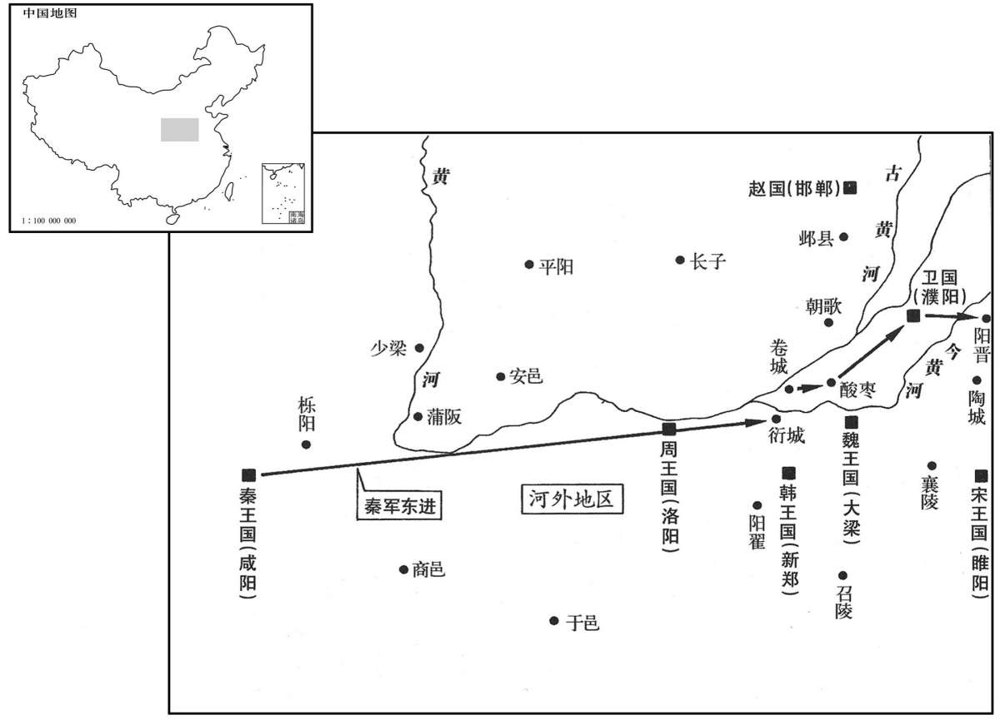
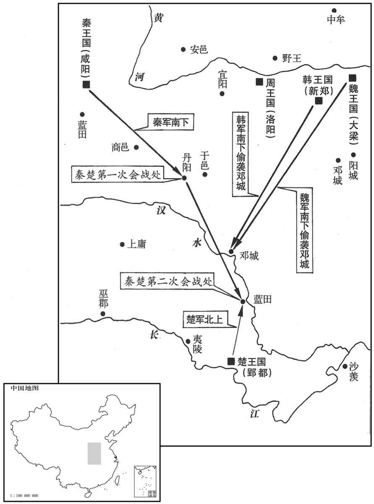
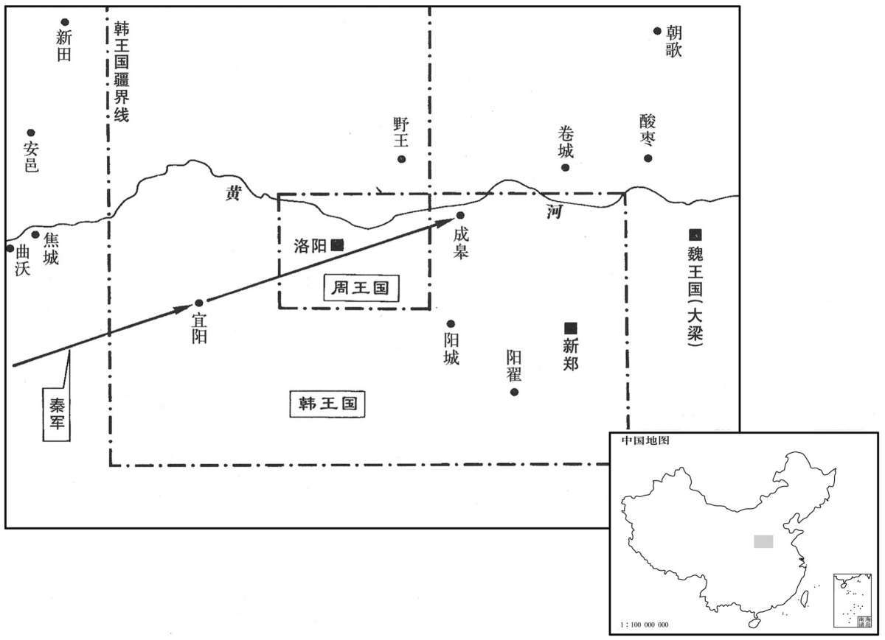
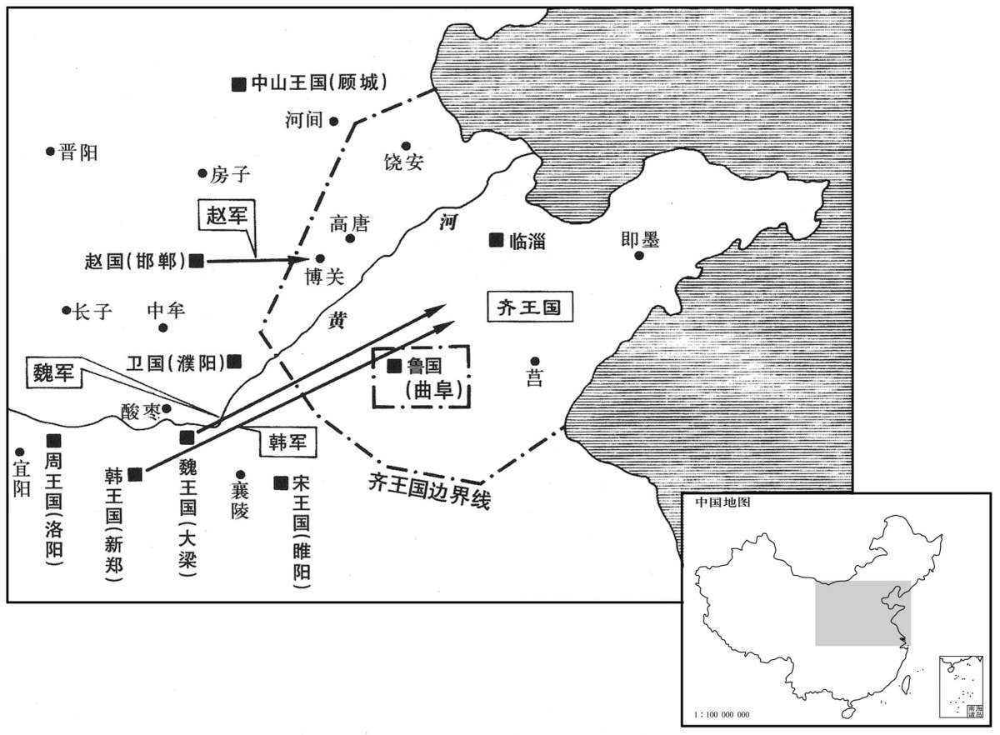
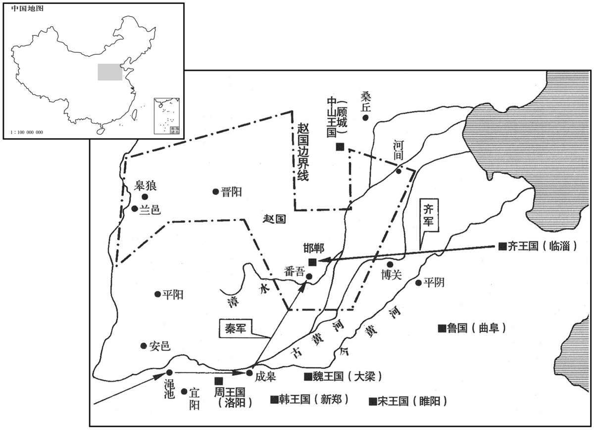
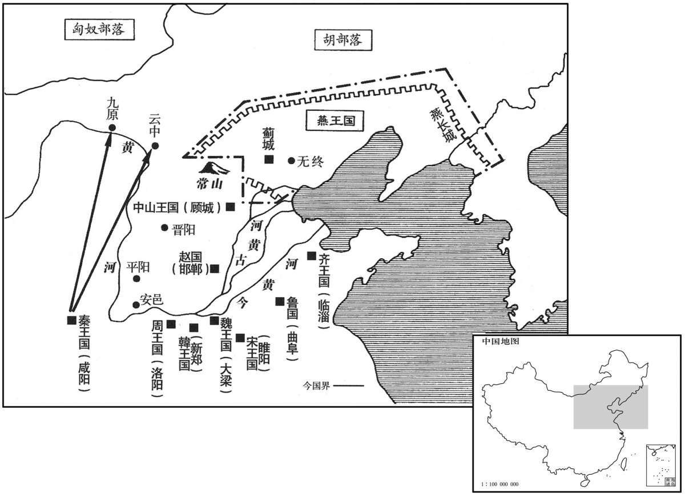
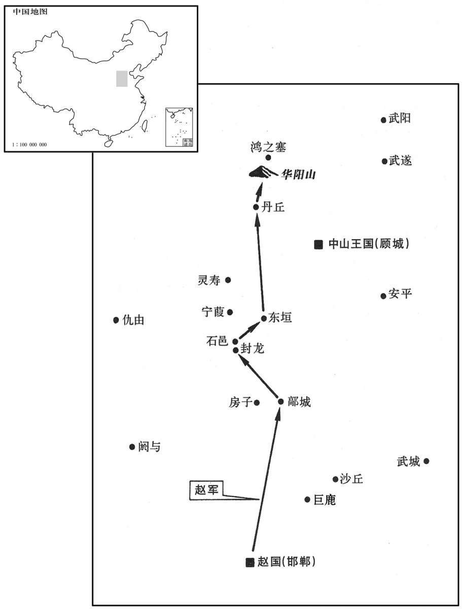

卷次与人物目录 / 卷3
资治通鉴 · 卷第三【周纪三】
公元前320年至公元前298年 · 原文、白话与胡三省注
本页按胡注本编排保存全卷内容。白话采用本站所据译本，未可靠对应的内容另列说明；事件标题用于定位，并非原书文字。
本卷共78段原文，78段有译文对应，0段缺译或待核对。
卷第三【周纪三】起重光赤奋若（辛丑），尽昭阳大渊献（癸亥），凡二十有三年。
卷首原文与注释
慎靓王〔讳定，显王之子也。此复谥也。以谥法言之，谥法：敏以敬曰慎；柔德安众曰靖。靓，疾正翻。〕
公元前320年 · 慎靓王在位第1年
元年〔（辛丑、前三二○）〕
本年事件索引（现代整理）
卫更贬号曰君。〔显王二十三年，卫已贬号曰侯；介于秦、魏之间，国日以削弱，因更贬其号曰君。更，居孟翻。贬，悲检翻。〕
卫国国君再次把自己的爵位由侯降到君。
公元前319年 · 慎靓王在位第2年
二年〔（壬寅、前三一九）〕
本年事件索引（现代整理）
秦伐韩，取鄢。〔春秋“晋败楚师于鄢陵”，既此鄢也。班志作“傿陵”，属颍川郡。鄢，音谒晚翻，又于建翻，师古音偃。史记正义曰：许州鄢陵县西北十五里有鄢陵古城。〕
秦国进攻韩国，夺取鄢陵。
魏惠王薨，子襄王立。〔索隐曰：系本曰：襄王，名嗣。今按系本即世本，司马贞避唐讳，改“世”为“系”。考异曰；史记魏世家云：惠王三十六年卒，子襄王立。襄王十六年卒，子哀王立。哀王二十三年卒，子昭王立。六国表，惠王元辛亥，终丙戌；襄王元丁亥，终壬寅；哀王元癸卯，终乙丑。按杜预春秋后序云：太康初，汲县有发旧冢者，大得古书，其纪年篇起自夏、殷、周，皆三代王事，无诸国别也；惟特记晋国，起自殇叔，次文侯、昭侯，以至曲沃庄伯，皆用夏正，编年相次；晋国灭，独记魏事，下至魏哀王之二十年：盖魏国之史记也。哀王于史记，襄王之子，惠王之孙也。古书纪年篇，惠王三十六年改元，从一年始，至十六年而称惠成王卒，即惠王也；疑史记误分惠成之世以为后王年也。哀王二十三年乃卒，故特不称谥，谓之“今王”。裴骃魏世家注引和峤云：纪年起自黄帝，终于魏之今王；今王者，魏惠成王子。按太史公书，惠成王但言惠王，惠王子曰襄王，襄王子曰哀王。惠王三十六年卒，襄王立十六年卒，并惠、襄为五十二年。今按古文惠成王立三十六年，改元，称一年，改元后十七年卒。太史公书为误分惠成之世以为二王之年数也。世本，惠王生襄王而无哀王，然则“今王”者，魏襄王也。彼既魏史，所书魏事必得其真，今从之。〕
孟子入见而出，语人曰:“望之不似人君，就之而不见所畏焉。〔入见，贤遍翻。语，牛倨翻。〕卒然问曰：『天下恶乎定？』〔卒，七没翻。恶，音乌，何也。〕吾对曰：『定于一。』『孰能一之？』〔此一语，魏襄王以问孟子。〕对曰：『不嗜杀人者能一之。』『孰能与之？』〔此语亦襄王问。〕对曰：『天下莫不与也。王知夫苗乎？〔夫，音扶。〕七、八月之间旱，则苗槁矣。〔孟子此言，用周正也。周七、八月，夏五、六月也。槁，音考，干枯也。夏，户雅翻。干，音干。〕天油然作云，沛然下雨，则苗浡然兴之矣。〔油然，云盛貌。沛然，雨盛貌。浡然，兴起貌。沛，普盖翻。浡，音勃。〕其如是，孰能御之？』”
魏惠王去世，其子即位为魏襄王。孟轲前去拜见他，离开后对别人说：“襄王的样子就不像一个君主，和他接触也无法产生敬畏之感。他猛然问我：‘天下怎样才能安定？’我回答说：‘统一才能安定。’他又问：‘谁能统一？’回答：‘不滥杀人的人能统一。’‘谁愿意让他统一呢？’我回答说：‘天下的百姓都愿意。大王您知道禾苗吧，七八月间遇上大旱，禾苗都干枯萎靡。这时天上乌云密布，大雨滂沱，禾苗就生机勃勃，一片葱郁。这样的势头，谁能阻挡！’”
公元前318年 · 慎靓王在位第3年
三年〔（癸卯、前三一八）〕
本年事件索引（现代整理）
楚、赵、魏、韩、燕同伐秦，攻函谷关。〔燕，因肩翻，注已见上。宋白曰：函谷关在弘农。地理志注云：谓道形如函，孙卿子所谓“秦有松柏之塞”是也。〕秦人出兵逆之，五国之师皆败走。
楚国、赵国、魏国、韩国、燕国联合讨伐秦国，进攻函谷关。秦国出兵迎敌，五国联军败退而回。
公元前317年 · 慎靓王在位第4年
四年〔（甲辰、前三一七）〕
本年事件索引（现代整理）
秦败韩师于修鱼，斩首八万级，虏其将䱸、申差于浊泽。〔败，补迈翻。索隐曰：修鱼，地名。䱸、申差，二将名。索，山客翻。将，即亮翻。䱸，音瘦，又疏鸠翻。“浊泽”，年表作“观泽”。括地志，观泽在魏州顿丘县东十八里。〕诸侯振恐。
秦国在鱼大败韩国军队，杀死八万人，于浊泽俘虏韩军大将和申差。各国震惊。
张仪说魏襄王曰：“梁地方不至千里，卒不过三十万，地四平，无名山大川之限，卒戍楚、韩、齐、赵之境，〔戍，舂遇翻；字从“人”，从“戈”，人荷戈，所以戍也。梁地南接楚，西接韩，东接齐，北接赵。〕守亭、障者不过〔【章：十二行本“过”作“下”；乙十一行本同；孔本同；张校同。】〕十万，〔说文：亭，民所安定也，道路所舍也。障，堡障也，隔也，塞也，所以隔塞敌人也。〕梁之地势固战场也。夫诸侯之约从，盟于洹水之上，结为兄弟以相坚也。〔事见上卷显王二十六年。夫，音扶。从，子容翻。洹，于元翻。〕今亲兄弟同父母，尚有争钱财相杀伤，而欲恃反复苏秦之余谋，其不可成亦明矣？大王不事秦，秦下兵攻河外，据卷衍、酸枣，〔后汉志：卷县属河南郡，酸枣县属陈留郡。水经注：河水迳卷县北，又东至酸枣、延津，二邑皆河津之要也。卷，逵员翻。衍，以善翻。〕劫卫，取阳晋，则赵不南，赵不南则梁不北，梁不北则从道绝，从道绝则大王之国欲毋危不可得也。〔从道，谓约从之路也。从，子容翻。〕故愿大王审定计议，且赐骸骨。”〔人臣委身以事君，身非我之有矣，故于其乞退也，谓之乞骸骨。骸，户皆翻。〕魏王乃倍从约，〔倍，蒲妹翻。〕而因仪以请成于秦。张仪归，复相秦。〔仪罢秦相相魏，见上卷显王四十七年。相，息亮翻。〕
张仪劝说魏襄王道：“魏国地方不满千里，士兵不足三十万，地势四下平坦，没有崇关大河的险要。防军分别守卫与楚、韩、齐、赵接壤的边界，用来扼守要塞的不过十万人，所以，魏国历来是厮杀的战场。各国约定联合抗秦，在洹水结盟，作为兄弟之邦互相救援。然而同一父母的亲兄弟，有时还为争夺钱财互相残杀，各国之间，想靠反复无常小人苏秦的一番伎俩，就结成同盟，明显是不足恃的。大王您不与秦国结好，秦国就会发兵进攻河外，占据卷县、酸枣等地，袭击卫国，夺取阳晋。那时，赵国不能南下，魏国也不能北上，南北隔绝，就谈不上联合抗秦，大王您的国家想避免危险也不可能了。所以我希望大王您能深思熟虑，拿定主意，让我辞去魏国相位，回秦国去筹划修好。”魏王于是背弃了联合抗秦的盟约，派张仪前往秦国去求和。张仪回到秦国，再次出任国相。

鲁景公薨，子平公旅立。〔谥法：由义而济曰景；布义行刚曰景。〕
鲁国鲁景公去世，其子姬旅即位为鲁平公。
公元前316年 · 慎靓王在位第5年
五年〔（乙巳、前三一六）〕
本年事件索引（现代整理）
巴、蜀相攻击，〔巴，春秋巴子之国。蜀，蚕丛、鱼凫之后。华阳国志曰：昔蜀王封其弟于汉中，号曰苴侯，因命其邑曰葭萌。苴侯与巴王为好。后巴与蜀为雠，蜀王怒，伐苴侯，苴侯奔巴。巴求救于秦，秦伐蜀，蜀王败死。秦灭蜀，因遂灭巴、苴，置巴、蜀二郡。史记正义曰：巴子城在合州石镜县南五里，故垫江县也。宋白曰：巴子后理阆中。扬雄蜀本纪曰：蜀王本治广都樊乡，徙居成都。华，户化翻。苴，子余翻。葭，音家。萌，谟耕翻。垫，音叠。阆，音浪。〕俱告急于秦。秦惠王欲伐蜀，以为道险陿难至，〔陿与狭同。汉书赵充国传注：山附而夹水曰陿。〕而韩又来侵，犹豫未能决。〔说文：犹，玃属，居山中；闻人声，豫登木，无人乃下。世谓不决曰犹豫。一说，陇西谓犬子为犹，犬导人行，忽先忽后，故曰犹豫。又一说，犹豫，犬也，犬为人行，好先行，却住以俟其人，百步之间，如是者数四；先者，豫也，遂曰犹豫。犹，夷周翻，又余救翻。玃，厥缚翻。为，于伪翻。好，呼到翻。〕司马错请伐蜀。〔史记：重、黎之后，至周宣王时为程伯休父，为司马氏。错，七各翻，又七故翻。重，直龙翻。父，音甫。〕张仪曰：“不如伐韩。”王曰：“请闻其说。”仪曰：“亲魏，善楚，下兵三川，攻新城、宜阳，〔伊水、洛水、河水为三川。秦后置三川郡，汉改为河南郡。班志，新城县属河南郡。括地志：洛州伊阙县本汉新城县，在州南七十里。隋文帝改新城为伊阙，取伊阙山为名。〕以临二周之郊，〔周分为东、西，故曰二周。〕据九鼎，〔昔夏禹贡金九牧，铸鼎象物，桀有昏德，鼎迁于商；商纣暴虐，鼎迁于周；成王定鼎于郏鄏，宝之，以为三代共器。夏，户雅翻。郏，音夹。鄏，音辱。〕按图籍，〔图籍，谓天下之图籍，周官职方氏所掌是也。〕挟天子以令于天下，天下莫敢不听，此王业也。臣闻争名者于朝，争利者于市。今三川、周室，天下之朝市也，〔朝，直遥翻。周礼大宗伯注云：朝，犹朝也，欲其来之早也。人君昕旦亲政贵早，声转为朝。犹朝，陟遥翻。〕而王不争焉，顾争于戎翟，去王业远矣。”〔翟，与狄同。〕司马错曰：“不然。臣闻欲富国者务广其地，欲强兵者务富其民，欲王者务博其德，〔欲王，于况翻，又如字。〕三资者备而王随之矣。今王地小民贫，故臣愿先从事于易。〔易，弋豉翻。〕夫蜀，西僻之国而戎翟之长也，〔夫，音扶。长，知丈翻。〕有桀、纣之乱；以秦攻之，譬如使豺狼逐群羊；〔豺，徂斋翻。〕得其地足以广国，取其财足以富民，缮兵不伤众而彼已服焉。〔彼，谓蜀也。〕拔一国而天下不以为暴，利尽四〔【章：十二行本“四”作“西”；乙十一行本同。】〕海而天下不以为贪，是我一举而名实附也，而又有禁暴止乱之名。今攻韩，劫天子，恶名也，而未必利也；又有不义之名，而攻天下所不欲，危矣。臣请论其故：周，天下之宗室也。〔周室为天下所宗，故谓之宗室。〕齐，韩之与国也。〔邻国相亲睦者，谓之与国。〕周自知失九鼎，韩自知亡三川，将二国并力合谋，以因乎齐、赵而求解乎楚、魏，〔并，必正翻。求解者，先与之构怨隙而今求和解也。〕以鼎与楚，以地与魏，王弗能止也。此臣之所谓危也。不如伐蜀完。”〔完，全也。言以兵伐蜀，十全必取也。〕王从错计，〔错，七各翻，又七故翻。〕起兵伐蜀：十月取之。〔取，言易也。易，弋豉翻。〕贬蜀王，更号为侯；〔贬，悲检翻。更，工衡翻。〕而使陈庄相蜀。〔相，息亮翻。〕蜀既属秦，秦以益强，富厚，轻诸侯。
巴国、蜀国互相攻击，都来向秦国告急求救，秦惠王想出兵讨伐蜀国，但顾虑道路险峻难行，韩国又可能来侵犯，所以犹豫不决。司马错建议他仍旧出兵伐蜀，张仪却说：“不如去征讨韩国。”秦惠王说：“请谈谈你的见解。”张仪便陈述道：“我们应该与魏国、楚国亲善友好，然后出兵黄河、伊水、洛水一带，攻取新城、宜阳，兵临东西周王都，控制象征王权的九鼎和天下版图，挟持天子以号令天下，各国就不敢不从，这是称王的大业。我听人说，要博取名声应该去朝廷，要赚取金钱应该去集市。现在的黄河、伊洛一带和周朝王室，正好比天下的朝廷和集市，而大王您不去那里争雄，反倒纠缠于远方的戎狄小族争斗，这可不是帝王的大业啊！”司马错反驳张仪说：“不对。我也听说有这样的话：想要使国家富强必须先开拓疆土，想要使军队强大必须先让老百姓富庶，想要成就帝王大业必须先树立德望。这三个条件具备，帝王大业也就水到渠成。现在大王的国家地小民贫，所以我建议先从容易之事做起。蜀国，是西南偏僻之国，又是戎狄之族的首领，政治昏乱，如同夏桀、商纣；以秦国大兵攻蜀，就像狼入羊群一样。攻占它的土地可以扩大秦国疆域，夺取它的财富可以赡养百姓，而军队不须有大的伤亡就可以使蜀国屈服。这样，吞并一个国家而天下并不认为秦国强暴，获取广泛的利益天下也不认为秦国贪婪，我们一举两得、名利双收，更享有除暴安良的美誉。秦国若是攻打韩国、劫持周天子，就会臭名远扬，也不见得有什么实际利益。蒙受不义之名，攻打天下人所不愿攻占的地方，那可是很危险的！请让我细说其中的原因：周朝，是天下尊崇的王室；齐国，是韩国的亲睦友邦。周朝自知要失去九鼎，韩国自知要失去伊洛一带领土，两国将会齐心合力，共同谋划，求得齐国、赵国的援助，并与有旧怨的楚国、魏国和解，甚至不惜把鼎送给楚国，把土地割让给魏国，对此，大王您只能束手无策。这就是我所说的危险所在。所以，攻打蜀国才是十拿九稳的上策。”秦惠王听从了司马错的建议，起兵伐蜀，仅用了十个月就攻克全境，把蜀王降为侯，又任命陈庄为蜀国国相。蜀国为秦国吞并以后，秦国更加富庶和强盛而轻视周围各国。
苏秦既死，〔三年，苏秦死于齐。〕秦弟代、厉亦以游说显于诸侯。〔说，式芮翻。〕燕相子之与苏代婚，欲得燕权。苏代使于齐而还，〔燕，因肩翻。相，息亮翻。使，疏吏翻。还，从宣翻。〕燕王哙问曰：“齐王其霸乎？”〔哙，苦夬翻。〕对曰：“不能。”王曰：“何故？”对曰：“不信其臣。”于是燕王专任子之。鹿毛寿谓燕王曰：〔刘伯庄曰：鹿毛寿，人姓名；又曰潘寿。春秋后语作“唐毛寿”。徐广曰：一作“厝毛”。如徐广一作之说，当作“厝”。厝，音秦昔翻。清河有厝县。〕“人之谓尧贤者，以其能让天下也。今王以国让子之，是王与尧同名也。”燕王因属国于子之，〔属，之欲翻，付也，托也。〕子之大重。或曰：“禹荐益而以启人为吏，〔孟子曰：禹荐益于天，禹崩，天下之人不之益而之启，曰：“吾君之子也。”索隐曰：人，犹臣也。谓以启臣为益吏。索，山客翻。〕及老而以启为不足任天下，〔任，音壬。〕传之于益。启与交党攻益，夺之，天下谓禹名传天下于益而实令启自取之。〔按或曰一段事，与师春纪伊尹放太甲，潜出自桐，杀伊尹，事颇相类，古书杂记固多也。〕今王言属国于子之而吏无非太子人者，是名属子之而实太子用事也。”王因收印绶，自三百石吏已上而效之子之。〔后汉书舆服志曰：三王俗化雕文，诈伪渐生，始有印绶，以检奸萌。周礼掌节有玺节，郑氏注云：今之印章也。绶，组绶。古者佩玉以绶贯之。汉承秦制，乘舆玺绶；诸王以下，印以金、银、铜为差，绶以赤、紫、青、黑、黄为差。印，信也，刻文合信也。绶，受也，转相授受也。三百石吏，铜印，黑绶或黄绶。王制：诸侯大国之卿，食禄以田计之，为三十二夫之入。战国之卿，食禄万钟，其僭差不度甚矣。汉制：三公秩万石，至于斗食佐吏，凡十六等。三百石吏，第十等，奉月四十斛。绶，音受。玺，斯氏翻。组，祖五翻。乘，绳证翻。奉，与俸同，音扶用翻。〕子之南面行王事，而哙老，不听政，顾为臣，〔顾，反也。哙，苦夬翻。〕国事皆决于子之。〔为后燕乱张本。〕
苏秦死后，他的弟弟苏代、苏厉也以游说著称于各国。燕国相子之便崐与苏代结为通姻亲家，想谋得燕国大权。苏代出使齐国归来，燕王姬哙问他：“齐王能称霸吗？”苏代回答：“不能。”燕王又问：“为什么？”回答说：“他不信任臣僚。”于是燕王把大权交给子之。鹿毛寿也对燕王说：“人们称道尧是贤明君主，就是因为他能让出天下。现在燕王您要是把国家让给子之，就能与尧有同样的名声。”燕王于是把国家嘱托给了子之。子之从此大权集于一身。还有人对燕王说：“上古时禹推荐益为接班人，又任命儿子启的属下作益的官吏。到老时，禹说启不能胜任治理天下的重责，把君位传给益。然而启勾结自己的党羽攻击益，很快夺取了君位。因此天下人都说禹明着是传天下给益，而实际上是安排儿子启去自己夺位。现在燕王您虽然说了把国家交给子之，但官员都是太子的人，这同样是名义属于子之而实权在太子手里啊！”燕王便下令收缴所有官印，把三百石俸禄以上的官职都交给子之任命。从此，子之面南称王，姬哙年老，不再听理政事，反而成了臣子，国家大事都由子之来决断。
公元前315年 · 慎靓王在位第6年
六年〔（丙午、前三一五）〕
本年事件索引（现代整理）
王崩，子赧王延立。
周慎靓王去世，其子姬延即位为周赧王。
原书衔接
赧王上〔刘伯庄曰：赧，惭之甚也。轻微危弱，寄住东、西，足为惭赧，故号之曰赧；谥法本无赧字也。赧，音奴版翻。〕
公元前314年 · 赧王在位第1年
元年〔（丁未、前三一四）〕
秦人侵义渠，得二十五城。〔义渠，戎国名。按上卷显王四十二年，秦县义渠，以其君为臣，是已得义渠矣。今又侵得二十五城，何也？盖先此秦以义渠为县，君为臣，虽臣属于秦，义渠之国未灭也，秦稍蚕食侵其地。今得二十五城，义渠之国所余无几矣。盖秦兼并诸侯，不尽其国不止也。左传：有钟鼓曰伐，无曰侵。谷梁传：苞人民、驱牛马曰侵。斩树木、坏宫室曰伐。无几，居岂翻。传，直恋翻。坏，音怪。〕
秦国入侵义渠，夺取二十五个城镇。
魏人叛秦，秦人伐魏，取曲沃而归其人。又败韩于岸门，〔续汉志，颍川郡颍阴县有岸亭。注引徐广云；岸亭，即岸门。括地志：岸门在今许州长社县东北二十八里，今名长武亭。败，补迈翻。〕韩太子仓入质于秦以和。〔质，音致。〕
魏国反叛秦国，于是秦国讨伐魏国，攻占曲沃城，却将城中百姓驱归魏国。又在岸门打败韩国，韩国将太子韩仓送到秦国作为人质，以求和好。
燕子之为王三年，国内大乱。将军市被与太子平谋攻子之。齐王令人谓太子曰：〔令，卢经翻。〕“寡人闻太子将饬君臣之义，明父子之位，寡人之国〔【章：十二行本“国”下有“虽小”二字；乙十一行本同；孔本同；退斋校同。】〕唯太子所以令之。”〔饬，整也，修也，治也。治，直之翻。饬君臣之义，言太子平将治子之僭王之罪也。明父子之位，言太子平当继其父哙之位也。令，力政翻，命令也，号令也。〕太子因要党聚众，〔要，一遥翻，要结也。〕使市被攻子之，不克。市被反攻太子。构难数月，〔难，乃旦翻。〕死者数万人，百姓恫恐。〔恫，它红翻，痛也。〕齐王令章子将五都之兵，因北地之众以伐燕。〔将，即亮翻，又音如字，领也。邑有先王之庙曰都。或曰：都，邑之大者。北地，齐之北境也，盖汉千乘、清河、勃海之地。燕，因肩翻；下同。乘，绳证翻。〕燕士卒不战，城门不闭。齐人取子之，醢之，〔醢，呼改翻，肉酱也。〕遂杀燕王哙。〔哙，苦夬翻。〕
燕国子之作国王三年，国内大乱，将军市被与太子姬平合谋攻打子之。齐王派人对燕太子说：“我听说您将要整饬君臣大义，申明父子名位，我的国家愿意支持您的号召，做坚强后盾。”燕太子于是聚集死党，派将军市被进攻子之，却没有得手，市被反倒戈攻打太子。国内动乱几个月，死亡达几万人，人心惶惶。此时，齐王命章子为大将，率领国都周围五城的军队及北方的部队征伐燕国。燕国士兵毫无战意，城门大开不守。齐国便捕获了子之，把他剁成肉酱。燕王姬哙也同时被杀。
齐王问孟子曰：“或谓寡人勿取燕，或谓寡人取之。以万乘之国伐万乘之国，〔古者天子之地方千里，出兵车万乘。七国兼并以强大，于时皆为万乘之国。乘，绳证翻。〕五旬而举之，〔十日为旬，五旬，五十日。〕人力不至于此；不取，必有天殃。〔殃，咎也，祸也。〕取之何如？”孟子对曰：“取之而燕民悦则取之，古之人有行之者，武王是也。取之而燕民不悦则勿取，古之人有行之者，文王是也。以万乘之国伐万乘之国，箪食壶浆以迎王师，〔箪，竹器也；圆曰箪，方曰笥。箪，音丹。食，祥吏翻，熟食也。浆，水也，酢浆也。笥，相吏翻。酢，仓故翻。〕岂有他哉？避水火也。如水益深，如火益热，亦运而已矣！”〔运，转也。言燕之民将转而之他国也。〕
齐王请教孟轲：“有人建议我不要攻占燕国，有人却建议我乘机吞并它。我想，以万乘兵车的大国去进攻另一个同样的大国，五十天就征服，这靠人的力量是作不到的，只能是天意。现在我若不吞并燕国，上天一定会降祸怪罪。我把燕国并入齐国，怎么样？”孟轲回答说：“吞并后如果燕国人民很高兴，那就吞并吧，古代有这样做的，比如周武王。吞并而使燕国人民气愤，就不要吞并，古代也有这样行事的，比如周文王。齐国以万乘兵车大国征讨另一个大国，那里的百姓都捧着食品、茶水来迎接齐军，没有别的原因，就是为了跳出水深火热的战祸啊！如果新统治下水更深，火更热，百姓又将转而投奔别的国家了。”
诸侯将谋救燕，齐王谓孟子曰：“诸侯多谋伐寡人者，何以待之？”对曰：“臣闻七十里为政于天下者，汤是也；未闻以千里畏人者也。书曰：『徯我后，后来其苏。』〔书仲虺之诰之辞。徯，户礼翻，待也。后，君也。〕今燕虐其民，王往而征之，民以为将拯己于水火之中也，〔拯，上举也，援也，救也，助也，音之凌翻。〕箪食壶浆以迎王师。若杀其父兄，系累其子弟，〔赵岐曰：系累，缚结也。系户计翻。累，力追翻。〕毁其宗庙，迁其重器。〔重器，国之镇宝。〕如之何其可也！天下固畏齐之强也，今又倍地〔齐并燕则地倍其旧。燕，因肩翻。〕而不行仁政，是动天下之兵也。王速出令。反其旄倪，〔令，力政翻。赵岐曰：旄，老旄；倪，弱小。陆德明曰：倪，谓翳倪小儿也。记曲礼曰：八十、九十曰耄，注云：耄，惛忘也。旄，读曰耄。倪，五兮翻。翳，与繄同，音烟兮翻。〕止其重器，谋于燕众，置君而后去之，则犹可及止也。”齐王不听。
各国策划援救燕国。齐王又对孟轲问道：“各国都谋划来讨伐我，怎么办？”回答说：“我听说过只占有七十里而能统一号令天下的例子，就是商王汤。没听说过拥有千里之广的国家而总是畏惧别人的。《尚书》说：“盼望我们的君主，他来了我们就可以获得解救。’现在燕国虐待它的百姓，大王前往征服它，燕国人民认为是从水深火热中拯救了他们，都箪食壶浆前来迎接仁义之师。您如果杀了他们的父兄，囚捕他们的子弟，毁坏他们的祖庙，掠夺他们的国宝，那可就不行了。天下本来就畏惧齐国的强大，现在齐国土地又增加了一倍，如果不施行仁政，那么就会招致天下的讨伐。大王您应该立即下令，释放被捕的老幼百姓，停止掠夺燕国的财宝，与燕国民众商议，推举新的国君，然后离开燕国，这样做还来得及。”齐王却没有采纳孟轲的劝告。
已而燕人叛。〔是时燕人虽未立太子平，固已相帅叛齐矣。〕王曰：“吾甚惭于孟子。”陈贾曰：“王无患焉。”乃见孟子，曰：“周公何人也？”曰：“古圣人也。”陈贾曰：“周公使管叔监商，〔古殷，商通称，商者，以始封为国号，殷者，以都亳为国号。按孟子，陈贾只云“监殷”，今通鉴云“监商”，避宋庙讳也。监，古衔翻。〕管叔以商畔也。周公知其将畔而使之与？”〔畔，与叛同。与，读曰欤，下同。〕曰：“不知也。”陈贾曰：“然则圣人亦有过与？”曰：“周公，弟也，管叔，兄也，周公之过不亦宜乎！且古之君子，过则改之；今之君子，过则顺之。古之君子，其过也如日月之食，民皆见之；及其更也，〔更，工衡翻，更改。〕民皆仰之。今之君子，岂徒顺之，又从为之辞！”
不久，燕国人果然纷纷反叛齐国，齐王叹息道：“我真惭愧没听孟轲的话。”陈贾说：“大王不用担心。”于是他前去见孟轲，问：“周公是什么样的人？”回答说：“是古代的圣人。”陈贾又说：“周公派管叔监视商朝旧地，管叔却在商地反叛。难道周公预先知道管叔会反叛而仍派他去吗？”回答：“周公预先不知道。”陈贾便说：“如此说来圣人也会犯错误吗？”孟轲说：“周公，是弟弟，管叔，是哥哥，周公的错误是可以理解的。况且古代的君子，有了错误就改；现在的所谓君子，有了错误听之任之。古代的君子，他的过失像日食月食，人民都看得到；待到他改正，人民便更加景仰他。现在的君子，不但听任错误不改，反而寻找托辞。”
公元前313年 · 赧王在位第2年
二年〔（戊申、前三一三）〕
原文件本年含注释括号异常；字符按原样保留，可展开胡注核对。
本年事件索引（现代整理）
秦右更疾伐赵，〔右更，秦爵第十四。师古曰：左、右、中更，皆主领更卒而部其役使也。更，工衡翻。〕拔蔺，虏其将庄豹。〔庄姓有出于宋者，左传所谓戴、武、庄之族是也；有出于楚者，楚庄王之后，庄蹻是也。齐之庄暴，楚之庄辛，蒙之庄周，与此庄豹，其时适相先后，莫能审其所自出。〕
秦国派名叫疾的右更官员，率军讨伐赵国。攻占蔺地，俘虏赵将庄豹。
秦王欲伐齐，患齐、楚之从亲，〔从，子容翻。〕乃使张仪至楚，说楚王曰：“大王诚能听臣，闭关绝约于齐，〔说，式芮翻。闭关者，古之列国各置关尹，敌国宾至，关尹以告，则行理以节逆之。闭关则距绝其使，不为通也。使，疏吏翻。〕臣请献商于之地六百里，使秦女得为大王箕帚之妾，〔于，如字。箕帚之妾，犹言备洒扫也。帚，止酉翻，彗也。〕秦、楚嫁女娶妇，长为兄弟之国。”楚王说而许之。〔说，读曰悦。〕群臣皆贺，陈轸独吊。〔陈姓出于舜，周武王封舜后于陈，子孙以国为氏。〕王怒曰：“寡人不兴师而得六百里地，何吊也？”对曰：“不然。以臣观之，商于之地不可得而齐、秦合，齐、秦合则患必至矣。”王曰：“有说乎？”对曰：“夫秦之所以重楚者，以其有齐也。〔夫，音扶，发语辞。〕今闭关绝约于齐则楚孤，秦奚贪夫孤国而与之商于之地六百里！张仪至秦，必负王。是王北绝齐交，西生患于秦也，〔楚东北接齐，西接秦。〕两国之兵必俱至。为王计者，不若阴合而阳绝于齐，使人随张仪，苟与吾地，绝齐未晚也。”王曰：“愿陈子闭口，毋复言，以待寡人得地！”〔毋，音无，毋者，禁止之辞。复，扶又翻，再又也。〕乃以相印授张仪，〔相，息亮翻。〕厚赐之。遂闭关绝约于齐，使一将军随张仪至秦。〔班固百官表：将军，周末官，秦、汉因之。〕
秦王想征伐齐国，又顾虑齐国与楚国有互助条约，便派张仪前往楚国。张仪对楚王说：“大王如果能听从我的建议，与齐国废除盟约，断绝邦交，我可以向楚国献上商於地方的六百里土地，让秦国的美女 来做侍奉您的妾婢。秦、楚两国互通婚嫁，就能永远结为兄弟之邦。”楚王十分高兴，允诺张仪的建议。群臣都前来祝贺，只有陈轸表示哀痛。楚王恼怒地问：“我一兵未发而得到六百里土地，有什么不好？”陈轸回答：“您的想法不对。以我之见，商於的土地不会到手，齐国、秦国却会联合起来，齐、秦一联合，楚国即将祸事临门了。”楚王问：“你有什么解释呢？”陈轸回答：“秦国之所以重视楚国，就是因为我们有齐国作盟友。现在我们如果与齐国毁约断交，楚国便孤立了，秦国又怎么会偏爱一个孤立无援的国家而白送商於六百里地呢！张仪回到秦国以后，一定会背弃对大王您的许诺。那时大王北与齐国断交，西与秦国生崐出怨仇，两国必定联合发兵夹攻。为您算计，不如我们暗中与齐国仍旧修好而只表面上绝交，派人随张仪回去，如果真的割让给我们土地，再与齐国绝交也不晚。”楚王斥责道：“请你陈先生闭上嘴巴，不要再说废话了，等着看我去接收大片土地吧！”于是把国相大印授给张仪，又重重赏赐他。随后下令与齐国毁约断交，派一名将军同张仪前往秦国。
张仪详堕车，〔详，读曰佯，诈也。〔【章：乙十一行本正作“佯”。】〕不朝三月。〔朝，直遥翻。〕楚王闻之，曰：“仪以寡人绝齐未甚邪？”〔邪，余遮翻。邪，疑辞也。〕乃使勇士宋遗借宋之符，北骂齐王。〔既闭关绝约，则齐、楚之信使不通，故使宋遗借宋符以至齐。宋，姓也。周武王封微子于宋，子孙以国为氏。〕齐王大怒，折节以事秦，〔折，而设翻。〕齐、秦之交合。〔仪归而诈疾，待齐、秦之交合乃朝。〕张仪乃朝，见楚使者曰：“子何不受地？从某至某，广袤六里。”〔朝，直遥翻。使，疏吏翻。东西曰广，南北曰袤。广，古旷翻，又读如字。袤，音茂。〕使者怒，还报楚王。〔还，从宣翻，又音如字。〕楚王大怒，欲发兵而攻秦。陈轸曰：“轸可发口言乎？攻之不如因赂之以一名都，与之并力〔【章：十二行本“力”作“兵”；乙十一行本同；孔本同。】〕而攻齐，是我亡地于秦，取偿于齐也。〔偿，辰羊翻，报也。〕今王已绝于齐而责欺于秦，是吾合齐、秦之交而来天下之兵也，国必大伤矣！”楚王不听，使屈匄帅师伐秦。〔屈，姓也，音九勿翻，匄，居大翻。帅，读曰率。〕秦亦发兵使庶长章击之。〔长，知丈翻。按史记樗里子传，庶长章，姓魏。〕
张仪回国后，假装从车上跌下，三个月不上朝。楚王听说后自语道：“张仪是不是觉得我与齐国断交做得还不够？”便派勇士宋遗借了宋国的符节，北上到齐国去辱骂齐王。齐王大怒，立即降低身份去讨好秦国，齐国、秦国于是和好。这时张仪才上朝，见到楚国使者，故作惊讶地问：“你为何还不去接受割地？从某处到某处，有六里多见方。”使者愤怒地回国报告楚王，楚王勃然大怒，想发兵攻打秦国。陈轸说：“我可以开口说话吗？攻秦国还不如用一座大城的代价去收买它，与秦国合力攻齐国。这样我们从秦国失了地，还可以在齐国得到补偿。现在大王您已经与齐国断交，又去质问秦国的欺骗行为，是我们促使齐国、秦国和好而招来天下的军队了，国家一定会有大损失！”楚王仍是不听他的劝告，派屈率军队征讨秦国，秦国也任命魏章为庶长之职，起兵迎击。
公元前312年 · 赧王在位第3年
三年〔（己酉、前三一二）〕
原文件本年含注释括号异常；字符按原样保留，可展开胡注核对。
本年事件索引（现代整理）
春，秦师及楚战于丹阳，〔索隐曰：此丹阳在汉中。刘昭曰：南郡枝江县有丹阳聚，即秦破楚处。李舆地纪胜曰：丹阳在今归州秭归县东八里屈沱楚王城是也。余按楚遗屈伐秦，秦发兵逆击之，枝江之丹阳则距郢逼近，秭归之丹阳则不当秦、楚之路。索隐因下文遂取汉中，即谓丹阳在汉中，皆非也。此丹阳谓丹水之阳。班志：丹水出上洛冢岭山，东至析入钧水，其水盖在弘农丹水、析两县之间，武关之外也。秦、楚交战当在此水之阳。楚师既败，秦师乘胜取上庸路西入以收汉中，其势易矣。索，山客翻。与埴同。屈，九勿翻。冢，知陇翻。易，弋豉翻。〕楚师大败，斩甲士八万，虏屈匄及列侯、执圭七十余人，〔执圭，楚爵也，执圭而朝者也。〕遂取汉中郡。〔自沔阳、成固至新城、上庸，时皆汉中郡之地。释名曰：郡，群也，人所群聚也。黄义仲十三州记曰：郡之言君也。改公侯之封而言君者，至尊也。今郡字，“君”在其左，“邑”在其右，君为元首，邑以载民，故取名于君，谓之郡。〕楚王悉发国内兵以复袭秦，〔复，扶又翻。〕战于蓝田，〔班志，蓝田县属京兆，秦孝公置。史记正义曰：蓝田县在雍州东南八十里。从蓝田关入蓝田县，时楚袭秦深入。〕楚师大败。韩、魏闻楚之困，南袭楚，至邓。〔邓，春秋邓国之地。班志，邓县属南阳郡。杜预曰：颍川召陵县西有邓城。括地志曰：故邓城在豫州郾陵县东三十五里，所谓在古召陵西十里者也。召，读曰邵。〕楚人闻之，乃引兵归，割两城以请平于秦。
春季，秦、楚两国军队在丹阳大战，楚军大败，八万甲士被杀，屈及以下的列侯、执圭等七十多名官员被俘。秦军乘势夺取了汉中郡。楚王又征发国内全部兵力再次袭击秦国，在蓝田决战，楚军再次大败。韩、魏等国见楚国危困，也向南袭击楚国，直达邓。楚国听说了，只好率军回救，割让两座城向秦国求和。

燕人共立太子平，是为昭王。〔燕，因肩翻。〕昭王于破燕之后。〔【章：十二行本“后”下有“即位”二字；乙十一行本同；孔本同；张校同。】〕言燕国为齐所破，已承其后也。〕吊死问孤，与百姓同甘苦，卑身厚币以招贤者。谓郭隗曰：“齐因孤之国乱而袭破燕，孤极知燕小力少，〔臧文仲曰：列国有凶称孤，礼也。杜预曰：列国诸侯无凶则称寡人。郭姓出于周之虢公，世亦谓虢公为郭公。隗，五罪翻。少，始绍翻。〕不足以报；然诚得贤士与共国，以雪先王之耻，〔谓燕王哙破国之耻。哙，苦夬翻。〕孤之愿也。先生视可者，得身事之！”郭隗曰：“古之人君有以千金使涓人求千里马者，〔春秋以来，诸侯之国有涓人，秦、汉之间有中涓。师古曰：涓，洁也。言其在中主知洁清洒扫之事，盖王之亲旧左右也。应劭曰：涓人如谒者。涓，古玄翻。洒，所卖翻；扫，所报翻；又皆音如字。〕马已死，买其首五百金而返。君大怒，涓人曰：『死马且买之，况生者乎！马今至矣。』不期年，千里之马至者三。〔期，读曰。〕今王必欲致士，先从隗始，况贤于隗者，岂远千里哉！”〔言燕王若加礼于郭隗，则四方之贤士闻之，将不以千里为远而来。〕于是昭王为隗改筑宫而师事之。于是士争趣燕：〔为，于伪翻。趣，七喻翻。〕乐毅自魏往，剧辛自赵往。〔剧，竭戟翻。剧，姓；辛，名。剧姓莫知其所自出。班志，北海郡有剧县，盖其先以县为姓也。〕昭王以乐毅为亚卿，任以国政。〔为燕用乐毅破齐张本。〕
燕国贵族共同推举太子姬平为燕昭王。昭王是在燕国被齐国攻破后即位的，他凭吊死者，探访贫孤，与百姓同甘共苦。自己纡尊降贵，用重金来招募人才。他问郭隗：“齐国乘我们的内乱而攻破燕国，我深知燕国国小力少，不足以报仇。然而招揽贤士与他们共商国是，以雪先王的耻辱，始终是我的愿望。先生您如果见到合适人才，我一定亲自服侍他。”郭隗说：“古时候有个君主派一个负责洒扫的涓人用千金去购求千里马，那个人找到一匹已死的千里马，用五百金买下马头带回。君主大怒，涓人解释说：‘死马您还买，何况活的呢！天下人知道了，好马就会送上来的。’不到一年，果然得到了三匹千里马。现在大王您打算招致人才，就请先从我郭隗开始，比我贤良的人，都会不远千里前来的。”于是燕昭王为郭隗翻建府第，尊他为老师。各地的贤士果然争相来到燕国：乐毅从魏国来，剧辛从赵国来。昭王奉乐毅为亚卿高位，委托以国家大事。
韩宣惠王薨，子襄王仓立。
韩国韩宣惠王去世，其子韩仓即位为韩襄王。
公元前311年 · 赧王在位第4年
四年〔（庚戌、前三一一）〕
蜀相杀蜀侯。〔相，息亮翻。蜀相，盖陈庄也。〕
蜀国国相杀死封侯的国君。
秦惠王使人告楚怀王，请以武关之外易黔中地。〔武关，左传之少习，地在汉弘农郡析县西百七十里，道通南阳。晋太康地志曰：武关当冠军西。括地志曰：武关在商州上洛县东。武关之外，盖秦丹、析、商于之地。黔，音琴。少，始照翻。冠，工玩翻。于，音如字。〕楚王曰：“不愿易地，愿得张仪而献黔中地。”张仪闻之，请行。王曰：“楚将甘心于子，〔楚王以堕张仪之诈，故欲甘心焉。〕柰何行？”张仪曰：“秦强楚弱，大王在，楚不宜敢取臣。且臣善其嬖臣靳尚，〔嬖，匹计翻，又卑义翻。靳，居焮翻，姓也。〕靳尚得事幸姬郑袖，〔郑，以国为氏。“袖”，战国策作“袖”，古字也。〕袖之言，王无不听者。”遂往。楚王囚，将杀之。靳尚谓郑袖曰：“秦王甚爱张仪，将以上庸六县及美女赎之。〔上庸，春秋庸国。班志，上庸县属汉中郡。史记正义：上庸县，今房州。宋白曰：今房州竹山县古城，即汉上庸县。〕王重地尊秦，秦女必贵而夫人斥矣。”于是郑袖日夜泣于楚王曰：“臣各为其主耳。〔为，干伪翻。〕今杀张仪，秦必大怒。妾请子母俱迁江南，毋为秦所鱼肉也。”王乃赦张仪而厚礼之。张仪因说楚王曰：“夫为从者无以异于驱群羊而攻猛虎，不格明矣。〔说，式芮翻。夫，音扶。从，子容翻。格，当也。刘伯庄曰：格，各额翻，其字宜从“手”。余据字书，格，击也，也，从“木”亦通。〕今王不事秦，秦劫韩驱梁而攻楚，则楚危矣。秦西有巴、蜀，治船积粟，浮岷江而下，〔治，直之翻。江水出蜀郡湔氐道之岷山，故谓之岷江。释名曰：江，共也；小流入其中，所公共也。〕一日行五百余里，不至十日而拒〔【章：十二行本“拒”作“距”；乙十一行本同。】〕捍关，〔徐广曰：巴郡鱼复县有捍关。史记正义曰：在峡州巴山县界。捍，寒旦翻。〕捍关惊则从境以东尽城守矣，〔境，楚境也。捍关，楚之西境，从境以东，谓捍关以东也。〕黔中、巫郡非王之有。〔黔，巨今翻。班志，巫县属南郡。郦道元曰：县故楚之巫郡。杜佑曰：今归州巴东县是也。〕秦举甲出武关，则北地绝。〔北地，楚北境之地，陈、蔡、汝、颍是也。〕秦兵之攻楚也，危难在三月之内。〔难，乃旦翻。〕而楚待诸侯之救在半岁之外，夫待弱国之救，忘强秦之祸，此臣所为大王患也。〔夫，音扶。为，于伪翻。〕大王诚能听臣，臣〔【章：十二行本不重“臣”字；乙十一行本同；孔本同。】〕请令秦、楚长为兄弟之国，无相攻伐。”〔令，力丁翻。〕楚王已得张仪而重出黔中地，〔重，难也。以地为重，意难割弃之。〕乃许之。
秦惠王派人通知楚怀王，想用武关以外的地方换黔中之地。楚王说：“我不愿换地，只想用黔中之地来换张仪。”张仪听说后，请求秦王同 意。秦王问：“楚国要杀死你才甘心，你为什么还要去？”张仪说：“秦国强，楚国弱，只要大王您在，估计楚国不敢把我怎么样。而且我和楚王的宠臣靳尚关系密切，靳尚又侍奉楚王的爱姬郑袖，郑袖的话，楚王没有不听的。”于是欣然前往楚国。楚王把他下在狱中，准备处死。靳尚对郑袖说：“秦王十分宠爱张仪，想用上庸等六个县及美女来赎回他。大王看重土地，又尊重秦国，那样秦国的美女将被宠幸，您就会遭到冷落。”于是郑袖日夜在楚王面前哭着哀求：“当年的事，不过是臣各为其主。现在要是杀了张仪，秦国必定震怒。我请求让我们母子两人先迁居江南，不要成为秦国刀下的鱼肉。”楚王于是赦免了张仪，还以厚礼相待。张仪劝说楚王道：“倡导各国联合抗秦，简直是赶着羊群去进攻猛虎，明显无法相斗。现在大王您不肯听命秦国，秦国如果逼迫韩国、驱使魏国来联合攻楚，楚国可就危险了。秦国西部有巴、蜀两地，备船积粮，沿岷江而下，一天可行五百余里，不到十天就兵临关。关惊动，则由此以东的各城都要修治守备，黔中、巫郡便不再是大王您的了。秦国如果大举甲兵攻出武关，那么楚国的北部就成为绝地，秦兵再南攻楚国，楚国的存亡只在三个月以内，而楚国等待各国来救援要在半年以上。坐等那些弱国来救，而忘记了强秦的威胁，我可要为大王您现在的做法担心啊！大王如果能诚心诚意地听我的意见，我可以让楚国、秦国永久结为兄弟之邦，不再互相攻杀。”楚王虽然已经得到了张仪，却又舍不得拿黔中之地来交换，于是同意了张仪的建议，让他离开。
张仪遂之韩，说韩王曰：“韩地险恶山居，〔之，如也，自楚如韩也。韩有宜阳、成皋，南尽鲁阳，皆山险之地。说，式芮翻。〕五谷所生，非菽而麦，〔菽，式竹翻，豆也。〕国无二岁之食，见卒不过二十万。〔见卒，见在之兵。见，贤遍翻。〕秦被甲百余万。〔被，皮义翻。〕山东之士被甲蒙胄以会战，秦人捐甲徒裼以趋敌，〔胄，今谓之兜鍪。捐，与专翻，弃也。徒，徒行也。裼，音锡，袒也。趋，七喻翻。鍪，音牟。〕左挈人头，右挟生虏。夫战孟贲、乌获之士以攻不服之弱国，〔挟，户颊翻。孟贲、乌获，古之勇士。贲，音奔。〕无异垂千钧之重于鸟卵之上，必无幸矣。〔三十斤为钧。必无幸矣，言无幸而获全之理。〕大王不事秦，秦下甲据宜阳，塞成皋，〔下，遐稼翻。塞，悉则翻。〕则王之国分矣，鸿台之宫，桑林之苑，非王之有也。为大王计，莫如事秦以攻楚，以转祸而悦秦，计无便于此者。”韩王许之。
张仪便前往韩国，劝说韩王：“韩国地方险恶多山，所产五谷，不是豆子而是杂麦，国家口粮积存不够两年，现在军中的士兵不过二十万，秦国却有甲兵一百余万。崤山以东的人要披上盔甲才可以参战，而秦国人个个赤膊便能上阵迎敌，左手提着人头，右手夹着俘虏。秦国用孟贲、乌获那些勇士们来进攻不肯臣服的弱国，正像在鸟蛋上压下千钧重石，无一可幸免。大王您不肯迎合秦国，若秦国发下甲兵占踞宜阳，扼守成皋，大王的国家就被分裂，鸿台的宫殿，桑林的园苑，就不再是您能享有的了。为大王着想，您不如结好秦国进攻楚国，既转嫁了祸灾又取得秦国欢心，没有比这更好的主意了！”韩王听从了张仪的意见。
本段人物：张仪

张仪归报，秦王封以六邑，号武信君。复使东说齐王曰：“从人说大王者〔复，扶又翻。从人，合从之人也。从，子容翻。说，式芮翻。〕必曰：『齐蔽于三晋，地广民众，兵强士勇，虽有百秦，将无柰齐何。』大王贤其说而不计其实。今秦、楚嫁女娶妇，为昆弟之国；韩献宜阳；梁效河外；〔河外，秦盖以河东为河外，梁则以河西为河外，张仪以秦言之也。〕赵王入朝，割河间以事秦。〔朝，直遥翻。河间，赵地。汉文帝二年，分为河间国。应劭曰：在两河之间。唐为瀛州。〕大王不事秦，秦驱韩、梁攻齐之南地，〔汉泰山、城阳，齐南境之地也。〕悉赵兵，渡清河，指博关，临菑、即墨非王之有也！〔博关在济州西界之博陵。史记正义曰：博关在博州。赵兵从贝州渡清河指博关，则漯河以南临菑、即墨危矣。济，子礼翻。漯，托合翻。〕国一日见攻，虽欲事秦，不可得也！”齐王许张仪。
张仪回到秦国报告，秦王封赏给他六个城邑和武信君的爵位。又派他向东游说齐王说：“主张联合抗秦的人，必对您说：‘齐国有三晋作屏障，地广人多，兵强士勇，即使有一百个秦国，也拿齐国无可奈何。’大王您也总是称赞这种说法而不考虑实际情况。现在秦、楚两国互通婚姻，结为兄弟之国；韩国献给秦国宜阳；魏国交出河外之地；赵王也去朝见秦王，割让河间讨好秦国。大王若是不迎合秦国，秦国将驱使韩国、魏国之兵进攻齐国南部，再逼迫赵兵倾巢而出，渡过清河，直指博关。那时临淄、即墨等齐国心腹地带可就不属于您所有了。等到国家遭受攻击的那天，您再想讨好秦国，也来不及了！”齐王同样采纳了张仪的建议。
本段人物：张仪

张仪去，西说赵王曰：“大王收率天下以摈秦，秦兵不敢出函谷关十五年。〔摈，必刃翻。事见上卷显王三十六年。〕大王之威行于山东，敝邑恐惧，〔春秋以来，列国交聘，行人率自称其国曰敝邑。〕缮甲厉兵，力田积粟，愁居慑处，不敢动摇，〔慑，之涉翻，怖也，心伏也，失常也，失气也。处，昌吕翻。〕唯大王有意督过之也。〔师古曰：督过，视责也。索隐曰：督者，正其事而责之；督过，是深责其过也。〕今以大王之力，举巴、蜀，〔事见慎靓王五年。〕并汉中，〔事见上二年。〕包两周，〔元年服韩、魏，则包两周矣。〕守白马之津。〔班志，白马县属东郡。水经注：白马津在白马城之西北。白马城，唐为滑州治所。开山图曰：白马津东可二十许里，有白马山，山上常有白马群行，悲鸣则河决，驰走则山崩，后人因以名县及津。按通鉴不语怪，今此注亦近于怪，姑以广异闻耳。〕秦虽僻远，然而心忿含怒之日久矣。今秦有敝甲凋兵军于渑池，〔敝，败恶也，凋，瘁也，半伤也。败甲凋兵，谦其辞，言军于渑池，则张其势以临赵矣。康曰：渑池，赵邑。余据赵与韩、魏接境，韩有野王、上党，魏有河东、河内，而渑池则秦地也，汉为县，属弘农郡，赵安能越韩、魏而有之！康说非是。渑，莫善翻；又莫忍翻。〕愿渡河，逾漳，据番吾，〔言欲自渑池北渡河，又自此东逾漳水而进据番吾，此亦张声势以临赵也。番吾，即汉常山郡之蒲吾县也。刘昭注曰：史记番吾君，杜预云：晋之蒲邑也。此说非。括地志：番吾故城，在恒州房山县东二十里。番，音婆，又音盘。〕会邯郸之下，愿以甲子合战，正殷纣之事。〔武王伐纣，癸亥陈于商郊，甲子昧爽，纣帅其旅若林，会于牧野，前徒倒戈，攻其后以北，遂以胜殷杀纣。张仪引以惧赵，其有所侮而动，亦已甚矣。邯郸，赵都，音寒丹。〕谨使使臣先闻左右。〔使臣，上疏吏翻。〕今楚与秦为昆弟之国，而韩、梁称东藩之臣，齐献鱼盐之地，〔齐东濒于海，海滨广斥，鱼盐所出也。此时齐未尝献地于秦，张仪驾说以恐动赵耳。〕此断赵之右肩也。夫断右肩而与人斗，〔夫，音扶。断，丁管翻。〕失其党而孤居，求欲毋危得乎！今秦发三将军，其一军塞午道，〔索隐曰：午道当在赵之东，齐之西。午道，地名也。郑玄云：一纵一横为午，谓交道也。塞，悉则翻。〕告齐使渡清河，军于邯郸之东，〔邯郸，音寒丹。〕一军军成皋，驱韩、梁军于河外，〔史记正义曰：河外，谓郑滑州，北临河。余谓此河外，亦因赵而言之。〕一军军于渑池，约四国为一以攻赵，赵服必四分其地。〔言秦约齐、韩、魏四分赵地。〕臣窃为大王计，莫如与秦王面相约而口相结，常为兄弟之国也。”赵王许之。〔当时赵于山东最强，且主从约，张仪说之，亦费辞矣。〕
张仪离开齐国，又向西游说赵王道：“大王带头联合各国抵抗秦国，使秦兵十五年不敢出函谷关侵犯各国。大王的威望在崤山以东传扬，我们秦国十分恐惧，缮甲厉兵，积蓄粮草，时刻担忧您的威慑，不敢放松警惕，唯恐大王您兴兵前来问罪。现在我们秦国托福您大王的神力，一举攻下巴、蜀，吞并汉中，包围两周，兵抵白马津。我们秦国虽然地处偏远，然而对赵国心含愤怒已不是一天了。如今秦国有一支不成样子的败甲残兵驻在渑池，愿意渡过黄河，越过漳水，进据番吾，前来邯郸城下相会。希望用古时甲子会战形式，重演武王伐纣的故事。为此，特派使臣我来通知您的左右。现在楚国与秦国结为兄弟之邦，韩国、魏国俯首称臣，齐国献出盛产鱼盐的海滨之地，这就像砍断了赵国的右臂。被砍断了右臂而与别人争斗，失去同党而又孤立无援，想要不灭亡，能办到吗！如果秦国派出三支大军，一支军队扼守午道，通知齐国渡过清河，在邯郸之东驻军；另一支军队驻扎成皋，驱使韩、魏军队进军河外；第三支军队驻扎渑池，约定四国联合攻赵，征服后必定四分其地。我为大王着想，不如与秦王当面亲口结下盟约，使两国成为长久的兄弟之国。”赵王也接受了张仪的劝说。
本段人物：张仪

张仪乃北之燕，〔燕，因肩翻。〕说燕王曰：“今赵王已入朝，效河间以事秦。〔张仪自赵至燕，借此气势而为是虚言以动燕耳。朝，直遥翻。〕大王不事秦，秦下甲云中、九原。〔虞氏记曰：赵自五原河曲筑长城，东至阴山，又于河西造大城，一箱崩不就，乃改卜阴山河曲而祷焉，昼见群鹄游于云中，徘徊经日，见大光在其下，乃即其处筑城，今云中城是也。余谓此亦语怪，郦道元为后魏书之耳。宋白曰：胜州榆林县界有云中古城，赵武侯所筑，秦置云中郡，唐为单于都护府。班志：九原县属五原郡。汉之五原，即秦之九原郡也。唐为丰、盐等州之地。宋白曰：唐丰州治九原县。按云中九原，皆在燕之西，秦自上郡朔方下兵则可至。史记正义曰：古云中、九原郡皆在胜州。云中郡故城在榆林东北四十里。九原郡故城在胜州西界，今连谷县是。下，遐稼翻。元为，于伪翻。〕驱赵而攻燕。则易水、长城非大王之有也！〔水经注：易水出涿郡故安县阎乡西山，东届关城西南，即燕长城门也。易水又历长城而东过范阳、容城、安次、泉州县南而东入海。〕且今时齐、赵之于秦，犹郡县也，不敢妄举师以攻伐。今王事秦，长无齐、赵之患矣。”〔以利动之。〕燕王请献常山之尾五城以和。〔常山，即北岳恒山也。汉文帝讳恒，改曰常山，置常山郡。班志，常山在常山郡上曲阳县西北，其尾则燕之西南界。〕
最后，张仪北上到达燕国，对燕王说：“如今赵王已经去朝见秦王，并献出河间以迎合秦国。大王您不赶快结好秦国，秦国就会派甲兵到云中、九原，驱使赵国进攻燕国，易水、长城可就不是大王您的了！况且，现在齐国、赵国就像秦国的郡县一样，不敢妄起刀兵相攻伐。大王您服从秦国，就可以长年免除齐国、赵国的威胁了。”燕王于是请张仪献上恒山脚下的五个城以向秦国求和。
本段人物：张仪

张仪归报，未至咸阳，秦惠王薨，子武王立。〔索隐曰：武王，名荡。〕武王自为太子时，不说张仪；〔说，读曰悦。〕及即位，群臣多毁短之。〔毁短，訾毁而数其短也。〕诸侯闻仪与秦王有隙，〔隙，乞逆翻，怨隙也，衅隙也。物之有罅衅者为有隙，人之与人有怨者亦为有隙。〕皆畔衡，复合从。〔衡，读曰横。从，子容翻。以此观之，此时六国之势，利在合从，而从张仪连衡者，畏秦而摇于仪之说耳。〕
张仪回国报告，还没到咸阳，秦惠王就去世了，其子秦武王继位。武王从做太子时就不喜欢张仪，等到他一即王位，郡臣中很多人便前来诽谤数说张仪的短处。各国听说张仪与秦王间发生矛盾,都放弃了对秦国的许诺，再次联合抗秦。
公元前310年 · 赧王在位第5年
五年〔（辛亥、前三一○）〕
张仪说秦武王曰：“为王计者，东方有变，〔韩、魏皆在秦之东。说，式芮翻。〕然后王可以多割得地也。臣闻齐王甚憎臣，臣之所在，齐必伐之。臣愿乞其不肖之身以之梁，〔不肖，谦言无所肖似也。魏都大梁。〕齐必伐梁，齐、梁交兵而不能相去，〔言兵交不解，各欲去而不能也。〕王以其间伐韩，〔间，居苋翻，间隙也，又居闲翻，中间也。〕入三川，挟天子，案图籍，此王业也！”〔张仪欲倾周而为秦；始终以此说为主。挟，户颊翻。〕王许之。齐王果伐梁，梁王恐。张仪曰：“王勿患也！〔言勿以为患。〕请令齐罢兵。”〔令，卢经翻，使也；下同。〕乃使其舍人之楚，借使谓齐王曰：〔之，往也，如也。不敢径遣人使齐，而往楚借使，借使，言借楚人以为使。借，子夜翻；康资昔切。使，疏吏翻。〕“甚矣王之托仪于秦也！”齐王曰：“何故？”楚使者曰：“张仪之去秦也固与秦王谋矣，欲齐、梁相攻而令秦取三川也。今王果伐梁，是王内罢国而外伐与国，〔罢，读曰疲。〕而信仪于秦王也。”齐王乃解兵还。〔还，从宣翻，又如字。〕张仪相魏一岁，卒。〔相，息亮翻。卒，子恤翻。〕
张仪向秦武王建议：“为大王您考虑，东方发生事变，大王才能乘机多割得土地。我听说齐王十分憎恨我，我居留在哪里，齐国必定要去攻打。我请求让我这个不肖之人到魏国去，齐国必定要讨伐魏国，齐国、魏国正打得难解难分的时候，大王便可以乘机攻打韩国，进军三川，挟持天子，掌握天下的版图，这是帝王大业呀！”秦王允许张仪到魏国去。齐国果然出兵攻魏，魏王十分惊恐。张仪安慰说：“大王不要担心！让我来退掉齐兵。”于是派他的手下人到楚国，借使臣之口对齐王说：“大王把张仪托付给秦国的办法真厉害呀！”齐王问：“怎么讲？”楚国使者说：“张仪离开秦国本来就是与秦王定下的计谋，想让齐、魏两国互相攻击而秦国乘机夺取三川地方。现在大王您果然攻打魏国，正是对内劳民伤财，对外结仇邻国，而使张仪重新获得秦王的信任。”齐王听罢，下令退兵回国。张仪在魏国做了一年的国相，便去世了。
仪与苏秦皆以纵横之术游诸侯，致位富贵，天下争慕效之。〔纵，子容翻。〕又有魏人公孙衍者，号曰犀首，亦以谈说显名。〔说，式芮翻。〕其余苏代、苏厉、周最、楼缓之徒，纷纭于天下，务以辩诈相高，不可胜纪，〔姓谱曰：周姓本自周平王子，别封汝川，人谓之周家，因氏焉。一云：以赧王为秦所灭，黜为庶人，百姓称为周家，因氏焉。余按商有太史周任，谓为周姓所自出，夫岂不可！又赧王于时未灭，不可谓周最出于赧王。楼姓，夏少康之裔，周封为东楼公，子孙因氏焉。师古曰：纷纭，兴作貌，又物多而乱貌。胜，音升。赧，奴版翻。夏，户雅翻。少，始照翻。裔，苗裔。〕而仪、秦、衍最着。〔着者，显着于时。〕
张仪与苏秦都以合纵、连横的政治权术游说各国，达到富贵的高位，使天下人争相效法。还有个魏国人公孙衍，名号犀首，也以能说会道著称。其余的苏代、苏厉、周最、楼缓之流，纷纭而起，遍于天下，务必以诡辩诈术一争高下，多得举不胜举。然而还要数张仪、苏秦、公孙衍当时名声最为显赫。
孟子论之曰：或谓：“公孙衍张仪岂不大丈夫哉，一怒而诸侯惧，安居而天下熄？”〔熄，灭也，火灭为熄。此言天下兵革之事熄灭也。〕孟子曰：“是恶足为大丈夫哉！〔恶，音乌。〕君子立天下之正位，行天下之正道，得志则与民由之，不得志则独行其道，富贵不能淫，贫贱不能移，威武不能诎，〔诎，与屈同。〕是之谓大丈夫。”
孟轲论之曰：有人说：“公孙衍、张仪难道不是大丈夫吗？他一怒而使各国恐惧，安居时又能使兵火息灭。”孟轲说：“那岂能称得上大丈夫！君子处世堂堂正正，行天下之正道，得志便带领百姓，同行正道，不得志便洁身自好，独行正道，富贵不能淫，贫贱不能移，威武不能屈，这才能算得是大丈夫。”
史家评论 · 原文及其白话
扬子法言曰：或问：“仪、秦学乎鬼谷术而习乎纵横言，安中国者各十余年，是夫？”〔夫，音扶。〕曰：“诈人也，圣人恶诸。”〔恶，乌路翻。〕曰：“孔子读而仪、秦行，〔谓读孔子之言而行仪、秦之事。〕何如也？”曰：“甚矣凤鸣而鸷翰也！”〔翰，侯旰翻，又侯安翻，羽翰。〕“然则子贡不为欤？”曰：“乱而不解，子贡耻诸。”〔太史公曰：子贡一出，存鲁，乱齐，破吴，强晋而霸越。温公曰：考其年与事皆不合，盖六国游说之士托为之辞，太史公不加考订，因而记之；扬子云亦据太史公书发此语也。说，式芮翻。〕说而不富贵，仪、秦耻诸。”〔说，式芮翻。〕或曰：“仪、秦其才矣乎，迹不蹈已？”〔宋咸曰：蹈，践也；言仪、秦之才术超卓，自然不践循旧人之迹。践，慈演翻。〕曰：“昔在任人，帝而难之。〔书舜典：而难任人。孔安国注云：任，佞也；难，拒也；言佞人则斥远之。任，音壬。难，乃旦翻。〕不以才乎？才乎才，非吾徒之才也！”
扬雄《法言》曰：有人问：“张仪、苏秦学习鬼谷子的智术，运用合纵、连横的道理，各自使中国得到十几年的安定，是这样吗？”回答说：“骗人术。圣人对此十分厌恶。”又问：“读孔子的书而做张仪、苏秦那样的事，怎么样呢？”回答说：“这好像有凤凰般的嗓音却长着凶鸟的羽毛，糟透了！”再问：“然而孔子的弟子子贡不正是这样干的吗？”回答说：“子贡为的是排难解纷，张仪、苏秦为的是谋取富贵，游说的目的不同。”有人问：“张仪、苏秦能不蹈前人旧辙，也算是卓越的人才吧？”回答说：“上古时舜帝对奸佞之人加以拒斥，能说不考虑才干吗？那种人才倒是有才，但不是我们所认为的才干！”
本段人物：张仪
秦王使甘茂诛蜀相庄。〔四年，蜀相杀蜀侯，秦武王故诛之。史记“庄”作“壮”。案秦纪，秦既得蜀，使陈庄相蜀；从“庄”为是。〕
秦王派甘茂诛杀蜀国国相陈庄。
秦王、魏王会于临晋。〔班志，临晋县属冯翊，故大荔也，秦取之，更名临晋。应劭曰：临晋水，故名。臣瓒曰：晋水在河之东，此县在河之西，不得临晋水。旧说，秦筑高垒以临晋国，故曰临晋。章怀太子贤曰：临晋故城，在今同州朝邑县西南。余按唐书地理志，蒲州有临晋县。宋白曰：汉临晋县在今临晋县东南十八里，故解城是也。后魏改为北解县。周省。隋分猗氏县，置桑泉县。唐天宝十二载，改临晋县。天宝之改县，必有所据，则应劭临晋水之说，未可厚非。秦之临晋在河西，臣瓒、章怀之说皆是也。更，工衡翻。应，乙陵翻。瓒，藏旱翻。朝，直遥翻。解，户买翻。载，祖亥翻。〕
秦王、魏王在临晋相会。
赵武灵王纳吴广之女孟姚，〔吴姓，以国为氏。〕有宠，是为惠后。〔孔颖达曰：后，后也，言其后于天子，亦以广后胤也。战国诸侯僭王，亦称其夫人为后。〕生子何。〔为立何而长子章争国张本。长，知两翻。〕
赵武灵王娶吴广的女儿吴孟姚为惠后，十分宠爱她，生下儿子赵何。
本段人物：赵武灵王
公元前309年 · 赧王在位第6年
六年〔（壬子、前三○九）〕
本年事件索引（现代整理）
公元前308年 · 赧王在位第7年
七年〔（癸丑、前三○八）〕
原文件本年含注释括号异常；字符按原样保留，可展开胡注核对。
本年事件索引（现代整理）
秦、魏会于应。〔左传曰：邘、晋、应、韩，武之穆也。杜预注云：应国在襄阳城父县西。余按襄阳无城父县。后汉志，颍川父城县西南有应乡，古应国也。括地志曰：故应城因应山为名。古之应国在汝州鲁山县东三十里。应，乙陵翻。邘，音于。〕
秦国、魏国在应城举行会议。
秦王使甘茂约魏以伐韩，而令向寿辅行。甘茂〔【章：十二行本“茂”下有“至魏”二字；乙十一行本同；孔本同；张校同；退斋校同。】〕令向寿还，谓王曰：“魏听臣矣，〔令，卢经翻，使也。向，式让翻，姓也。姓谱：向姓本自宋文公枝子向文旰，旰孙戌以王父字为氏。余按左传，向戌本出于宋桓公。孟子为齐卿，出吊于滕，王使王驩为辅行。赵岐注曰：辅行，副使也。旰，音干。戌，音恤。传，直恋翻。使，疏吏翻。〕然愿王勿伐！”王迎甘茂于息壤而问其故。〔柳宗元曰：地长隆然而起，夷之而益高者为息壤。异书有云：鲧窃帝之息壤以堙洪水。意者此所谓息壤，盖以地长得名。长，知两翻。〕对曰：“宜阳大县，其实郡也。〔杜佑曰：春秋时列国相灭，多以其地为县，则县大而郡小，故赵鞅曰：“上大夫受县，下大夫受郡。”至于战国，则郡大而县小矣，故甘茂曰：“宜阳大县。其实郡也。”汉官仪曰：凡郡：或以列国，陈、鲁、齐、吴是也；或以旧邑，长沙、丹阳是也；或以山陵，泰山，山阳是也；或以川原，西河，河东是也；或以所出，金城城下得金，酒泉泉味如酒、豫章樟树生庭、雁门雁之所育是也；或以号令，夏禹合诸侯，大计东冶之山会计，因名会稽是也。令，力正翻。名会，古外翻。〕今王倍数险，行千里，攻之难。〔倍，与背同，音蒲妹翻。数险，谓函谷及三崤之险。〕鲁人有与曾参同姓名者杀人，人告其母，其母织自若也。〔参，所金翻，一音七南翻。〕及三人告之，其母投杼下机，逾墙而走。〔杼，直吕翻。说文曰：杼，机之持纬者，盖今所谓梭。梭，苏禾翻。〕臣之贤不若曾参，王之信臣又不如其母，疑臣者非特三人，臣恐大王之投杼也。魏文侯令乐羊将而攻中山，三年而拔之。〔事见一卷威烈王二十三年。令，音卢经翻。将，即亮翻。〕反而论功，文侯示之谤书一箧。〔谤，讪也，毁也。箧，竹笥也，音古颊翻。〕乐羊再拜稽首曰：『此非臣之功，君之力也！』〔稽首，首至地也。稽，音启。〕今臣，羇旅之臣也，〔甘茂，楚下蔡人，故云然。羇，居〔宜翻，寄也。旅，客也。〕樗里子、公孙奭挟韩而议之，王必听之，〔樗，丑于翻。奭，施只翻。挟，户颊翻。〕是王欺魏王而臣受公仲侈之怨也。”〔公仲侈，韩相也。〕王曰：“寡人弗听也，请与子盟！”乃盟于息壤。秋，甘茂、庶长封帅师伐宜阳。〔长，知丈翻。帅，读曰率。〕
秦王派甘茂去约定魏国共同进攻韩国，又让向寿作他的助手。甘茂命令向寿回国对秦王说：“魏国倒是听从了我的安排，不过我希望大王您不要进攻韩国！”秦王在息壤迎接甘茂，询问原因，甘茂回答说：“宜阳是个大县，其实应属郡一级。现在大王您下令面对多重险隘，不远千里，发兵进攻，是很困难的。鲁国有个与曾参同姓名的人杀了人，有人告诉曾参的母亲，他的母亲仍旧织布，泰然自若。等到先后来了三个人告诉她同样的事情，曾参母亲也扔下机杼，跳墙逃走了。我的贤良不如曾参，大王您对我的信任又不如曾参的母亲，猜疑我的人更不止三个人，所以我怕大王您将来也会有扔下机杼的举动。再说当年魏文侯任命乐羊为大将进攻中山国，三年才攻下。回来论功行赏，魏文侯向乐羊出示别人的指控书，多达一筐。乐羊一再叩头行礼说：‘这不是我的功劳，实在要归功于您信任啊！’现在我甘茂，是个寄居秦国的外籍人，樗里子、公孙将来抓住韩国的事情来攻击我，大王一定会听信他们。那时攻宜阳前功尽弃，结果是大王您背弃了与魏王的约定，而我遭受韩国国相公仲侈的怨恨。”秦王说：“我不会听他们的，可以和你起誓！”于是两人在息壤立下誓言。秋季，甘茂和名叫封的庶长率领大军前去攻打宜阳。
公元前307年 · 赧王在位第8年
八年〔（甲寅、前三○七）〕
原文件本年含注释括号异常；字符按原样保留，可展开胡注核对。
本年事件索引（现代整理）
甘茂攻宜阳，五月而不拔。樗里子、公孙奭果争之。秦王召甘茂，欲罢兵。甘茂曰：“息壤在彼。”〔征前盟也。〕王曰：“有之。”因大悉起兵以佐甘茂，〔佐，助也。〕斩首六万，遂拔宜阳。韩公仲侈入谢于秦以请平。〔请平，犹请和也。〕
甘茂率军进攻宜阳，过了五个月还没有攻克。樗里子、公孙果然争相指责他。秦王便派人去召甘茂，想罢兵回国。甘茂只说：“息壤还在原来的地方。”秦王恍然大悟，说：“有这回事。”于是征发全部兵力去协助甘茂，结果杀死韩军六万人，攻陷宜阳。韩国相公仲侈只好来谢罪求和。
秦武王好以力戏，〔好，呼到翻。〕力士任鄙、乌获、孟说皆至大官。〔乌，姓也。春秋时，齐有大夫乌枝鸣。姓谱：孟姓，鲁桓公之子仲孙之胤，仲孙为三桓之孟，故曰孟氏。任，音壬。说，读曰悦。〕八月，王与孟说举鼎，绝脉而薨；〔脉，莫获翻。脉者，系络脏腑，其血理分行于支体之间，人举重而力不能胜，故脉绝而死。按史记甘茂传云：武王至周而卒于周。盖举鼎者，举九鼎也。世家以为龙文赤鼎。史记“脉”作“膑”。〕族孟说。〔族者，诛夷其族。〕武王无子，异母弟稷为质于燕，〔质，音致。燕，因肩翻。〕国人逆而立之，〔逆，迎也。〕是为昭襄王。昭襄王母芈八子，〔芈，楚姓也。汉因秦制，嫡称皇后，次称夫人，又有美人、良人、八子、七子、长使、少使之号。美人爵视二千石，比少上造。八子视千石，比中更。芈，亡氏翻。〕楚女也，实宣太后。
秦武王喜好习武较力，大力士任鄙、乌获、孟说都先后做了大官。八月，秦王与孟说举大铜鼎时，用力过猛，血管破裂而死。孟说及其家族被杀。秦武王没有儿子，异母弟弟嬴稷在燕国做人质，国中贵族于是迎回他立为秦昭襄王。秦昭襄王的母亲芈八子，是楚国女子，封为宣太后。
赵武灵王北略中山之地，〔略地之师速而疾。杜预曰：略者，总摄巡行之名也。〕至房子，〔班志，房子县属常山郡。史记正义曰：房子，今赵州县。宋白曰：天宝元年改曰临城。〕遂至〔【章：十二行本“至”作“之”；乙十一行本同；孔本同；张校同；退斋校同。】〕代，北至无穷，〔自代北出塞外，大漠数千里，故日无穷。战国策，武灵王曰：“昔先君襄王与代交地，城境封之，名曰无穷之门，所以诏后而期远也。”〕西至河，登黄华之上。〔史记正义曰：黄华，盖黄河侧之山名。〕与肥义谋胡服骑射以教百姓，〔骑，奇寄翻。〕曰：“愚者所笑，贤者察焉。虽驱世以笑我，胡地、中山，吾必有之！”遂胡服。
赵武灵王向北进攻中山国，大兵经房子城，抵达代地，再向北直至大漠中的无穷，向西攻到黄河，登上黄华山顶，与大臣肥义商议让百姓穿短衣胡服，崐学骑马与射箭。他说：“愚蠢的人会嘲笑我，但聪明的人是可以理解的。即使天下的人都嘲笑我，我也这样做，一定能把北方胡人的领地和中山国都夺过来！”于是带头改穿胡服。
国人皆不欲，公子成称疾不朝。〔朝，直遥翻。〕王使人请之曰:“家听于亲，〔亲，谓父母。〕国听于君。今寡人作教易服而公叔不服，吾恐天下议己〔【章：十二行本“己”作“之”；乙十一行本同；孔本同；张校同，退斋校同。】〕也。制国有常，利民为本；从政有经，令行为上。〔令，力政翻。〕明德先论于贱，而从政先信于贵，〔德欲其下及，故先论于贱；卑贱者感其德，则德广所及可知矣。法行自贵近始，故先信于贵；贵近者奉法，则法之必行可知矣。〕故愿慕公叔之义以成胡服之功也。”公子成再拜稽首曰：〔稽，音启。〕“臣闻中国者，圣贤之所教也，礼乐之所用也，远方之所观赴也，蛮夷之所则效也。今王舍此而袭远方之服，〔则，法也。舍，读曰舍。袭，重衣也。〕变古之道，逆人之心，臣愿王孰图之也！”〔孰，古熟字，通。〔【章：十二行本正作“熟”；乙十一行本同；孔本同。】〕使者以报。王自往请之，〔使，疏吏翻。〕曰：“吾国东有齐、中山，〔按赵都邯郸，东接于齐，中山在其东北，故史记赵世家载武灵王之言曰：“吾国东有河薄落之水，与齐、中山同之。”盖河、薄落之水在赵之东，与齐、中山同此地险也。〕北有燕、东胡，西有楼烦、秦、韩之边。〔史记正义曰：营州之境，即东胡、乌丸之地。林胡、楼烦，即岚、胜之北也。班志：雁门郡楼烦县。应劭注云：故楼烦胡地。岚、胜以南，石州离石、蔺等，七国时赵边也，与秦隔河。晋、洺、潞、泽等州，皆七国时韩地，赵之西边地。燕，因肩翻。〕今无骑射之备，则何以守之哉？〔骑，奇寄翻〕先时中山负齐之强兵，侵暴吾地，系累吾民，〔先，悉荐翻。累，力追翻。〕引水围鄗，微社稷之神灵，则鄗几于不守也。〔鄗，赵邑，汉光武改为高邑，隋、唐为柏乡县地，唐属赵州。鄗，呼各翻。几，居衣翻。〕先君丑之，〔以为赵国之丑。〕故寡人变服骑射，欲以备四境之难，〔难，乃旦翻。〕报中山之怨。而叔顺中国之俗，恶变服之名，〔恶，乌路翻。〕以忘鄗事之丑，非寡人之所望也！”公子成听命，乃赐胡服；明日服而朝。〔朝，直遥翻。〕于是始出胡服令〔令，力政翻。〕而招骑射焉。
国中的士人有不少反对，公子成假称有病，不来上朝。赵王派人前去说服他：“家事听从父母，国政服从国君，现在我向人民宣传改变服装，而叔父您不穿，我担心天下人会议论我徇私情。治理国家有一定章法，总以有利人民为根本；办理政事有一定常规，执行命令是最重要的。宣传道德要先针对卑贱的下层，而推行法令必须从贵族近臣做起。所以我希望能借助叔父您的榜样来完成改穿胡服的功业。”公子成拜谢道：“我听说，中国是在圣贤之人教化下，用礼乐仪制，使远方国家前来游观，让四方夷族学习效法的地方。现在君王您舍此不顾，去仿效远方外国的服装，是擅改古代习惯、违背人心的举动，我希望您慎重考虑。”使者回报赵王。赵王便亲自登门解释说：“我国东面有齐国、中山国；北面有燕国、东胡；西面是楼烦，与秦、韩两国接壤，如果没有骑马射箭的训练，怎么能守得住呢？先前中山国倚仗齐国的强兵，侵犯我们领土，掠夺人民，又引水围灌城，如果不是老天保佑，城几乎就失守了。此事先王深以为耻。所以我决心改变服装，学习骑射，想以此抵御四面的灾难，一报中山 国之仇。而叔父您一味依循中国旧俗，厌恶改变服装，已经忘记了城的奇耻大辱，我对您深感失望啊！”公子成翻然醒悟，欣然从命，赵王亲自赐给他胡服，第二天他便穿戴入朝。于是，赵王正式下达改穿胡服的法令，提倡学习骑马射箭。
公元前306年 · 赧王在位第9年
九年〔（乙卯、前三○六）〕
本年事件索引（现代整理）
秦昭王使向寿平宜阳，〔平，正也，和也。正宜阳之疆界而和其民人也。向，式亮翻。〕而使樗里子、甘茂伐魏。甘茂言于王，以武遂复归之韩。〔史记正义曰：武遂本属韩，近平阳。楚世家云：韩先王之墓在平阳，武遂去之七十里。去年秦拔宜阳，因涉河城武遂，今复归之韩。复，音如字。〕向寿、公孙奭争之，不能得，〔向，式让翻。〕由此怨谗甘茂。茂惧，辍伐魏蒲阪，亡去。〔班志，蒲阪县属河东郡，旧曰蒲。应劭曰：秦始皇东巡，见长阪，因加“阪”云。括地志：蒲阪故城，在蒲州河东县南五里。阪，音反。〕樗里子与魏讲而罢兵，〔讲，和也。〕甘茂奔齐。
秦昭王派向寿去平抚宜阳，又令樗里子、甘茂去攻打魏国。甘茂向秦王建议，把武遂归还给韩国。向寿、公孙坚决反对，但未能阻止，于是怨恨甘茂。甘茂心中恐惧，便中断对魏国蒲阪的进攻，逃走了。樗里子只好与魏国讲和退兵。结果甘茂投奔到齐国去了。
赵王略中山地，至宁葭；〔水经注：衡漳水东北历下博城西，又西迳乐乡县故城南，又东引葭水注之。葭，音加。〕西略胡地，至榆中。〔水经注：诸次水出上郡诸次山，其水东迳榆林塞，世又谓之榆林山，即汉书所谓“榆溪旧塞”者。自溪西去，悉榆柳之薮，缘历沙陵，届龟兹县西出，故云广长榆也。王恢曰“树榆为塞”，谓此。苏林以为榆中在上郡，非也。按始皇本纪：西北逐匈奴，自榆中并河以东，属之阴山。然榆中在金城东五十许里，阴山在朔方东，以此推之，不得在上郡。余谓苏林之说固未为尽，而道元所谓榆中在金城东五十许里亦非也。据卫青取河南地，案榆溪旧塞，正在唐麟、胜二州界，其西则接古上郡之境。况诸次水出上郡，迳榆林塞入河，则榆中在上郡之东明矣，诸次水无西流至金城、榆中之理。夷考其故，道元特以班志金城郡有榆中县，遂牵合以为说，不知此一节之误尤甚于苏林也。史记正义曰：榆中，胜州北河北岸也。杜佑曰：胜州榆林郡南即秦榆林塞。〕林胡王献马，〔如淳曰：林胡，即儋林。余谓此胡种落依阻林薄，因曰林胡。儋，都甘翻。种，章勇翻。〕归，使楼缓之秦，仇液之韩。王贲之楚，〔归，谓赵王自略中山归也。仇，姓也。春秋时，宋有大夫仇牧。液，音亦。之，往也，如也。贲，音奔；康曰：离之父，翦之子。余按离父、翦子，秦将也；此王贲乃赵人，康说非是。将，即亮翻。〕富丁之魏，〔富，姓也。春秋时，周有大夫富辰。〕赵爵之齐；代相赵固主胡，致其兵。〔相，息亮翻。致者，使之至也。〕
赵王进攻中山国，兵抵宁葭；又向西攻打胡人，直至榆中。胡人的林胡王献马求和。赵王归来，派楼缓出使秦国，仇液出使韩国，王贲出使楚国，富丁出使魏国，赵爵出使齐国；命代相赵固主持胡人部落事务，召集胡兵。
楚王与齐、韩合从。〔楚与齐、韩合从，寻即倍之，适足致齐、韩之兵耳。从，子容翻。〕
楚王与齐国、韩国订立同盟。
公元前305年 · 赧王在位第10年
十年〔（丙辰、前三○五）〕
本年事件索引（现代整理）
彗星见，〔彗星，世所谓扫星，本类星，末类彗，小者数寸，长或竟天，见则兵起，主扫除，除旧布新。唐史臣曰：彗体无光，傅日以为光，故夕见则东指，晨见则西指，或长或短，光芒所及则为灾。又曰：孛星，彗之属也，偏指曰彗，气四出曰孛。孛者孛孛，非常恶气之所生，灾甚于彗。天文书谓五星之精为妖，岁星流为苍彗，荧惑、填星散为赤彗、黄彗，太白、辰星变为白彗、黑彗。彗，祥岁翻，又徐醉翻，又旋芮翻。见，贤遍翻。扫，所报翻。傅，读曰附。孛，蒲内翻。妖，于遥翻。填，读曰镇。〕
天空出现彗星。
赵王伐中山，取丹丘、爽阳、鸿之塞，又取鄗、石邑、封龙、东垣。〔史记正义曰：丹丘，邢州县。余按隋、唐志，邢州有内丘县，汉之中丘县也，未尝有丹丘，不知其何据。“爽阳、鸿之塞，”史记作“华阳、鸱之塞”。括地志曰：北岳别名曰华阳台，即常山也，在定州恒阳县北百四十里。徐广曰：“鸱”作“鸿”，鸿上故关，今名汝城，在定州唐县东北六十里。又有鸿上水，出唐县北葛洪山，山接北岳恒山，皆在定州界。班志，石邑县属常山郡，井陉山在西。括地志：石邑故城，在恒州鹿泉县南三十五里。封龙山，一名飞龙山，在恒州鹿泉县南四十五里，邑盖因山为名。洪氏隶释载后汉所立白石碑云：常山国元氏县界有封龙山。东垣，即汉真定国之真定县，汉高帝更名。史记正义曰：赵之东垣，在恒州真定县南八里，故常山城是也。鄗，呼各翻。垣，于元翻。华，户化翻。恒，户登翻，鸱，丑之翻。陉，音刑。更，工衡翻。〕中山献四邑以和。
赵王进攻中山国，夺取丹丘、爽阳、鸿之塞，又攻占城、石邑、封崐龙、东垣。中山国只好献出四城求和。
本段人物：赵武灵王

秦宣太后异父弟曰穰侯魏冉，同父弟曰华阳君芈戎；王之同母弟曰高陵君、泾阳君。魏冉最贤，〔秦封穰侯于陶，陶即范蠡所居陶邑。孟康曰：陶即定陶。班志，定陶县属济阴郡。下云封于穰与陶；穰县属南阳郡，去定陶差远。水经注曰：穰侯封于穰，益封于陶，其免相也，出之陶而卒，陶有穰侯。穰，音人羊翻。华阳，即武王归马之地。水经注：洛水自上洛县东北分为二水，枝渠东北出为门水，水东北历阳华之山，即华阳也。华，音户化翻。芈，眉婢翻。相，息亮翻。卒，子恤翻。冢，知陇翻。班志，高陵县属冯翊，泾阳县属安定。杜佑曰：京兆泾阳县乃秦封泾阳君之地。汉泾阳县在今平凉郡界泾阳故城是也。宋白曰：雍州泾阳本秦旧县。与杜佑同。索隐曰：高陵君，名显，泾阳君，名悝。索，山客翻。悝，苦回翻。〕自惠王、武王时，任职用事，武王薨，诸弟争立，唯魏冉力能立昭王。〔惠王，即惠文王。昭王，即昭襄王〕昭王即位，以魏冉为将军，卫咸阳。是岁，庶长壮及大臣、诸公子谋作乱。〔长，知丈翻。〕魏冉诛之；及惠文后皆不得良死，〔惠文后，昭王嫡母也。死于正命曰良死。〕悼武王后出居〔【章：十二行本“居”作“归”；乙十一行本同；孔本同；退斋校同。】〕于魏，〔悼武王后，即秦武王后，昭王嫂也。〕王兄弟不善者，魏冉皆灭之。王少，宣太后自治事，任魏冉为政，威震秦国。〔少，诗照翻。治，直之翻。为范睢间魏冉张本。〕
秦国宣太后异父弟为穰侯魏冉，同父弟为华阳君芈戎；秦王的同母弟为高陵君、泾阳君。其中魏冉最贤良，从秦惠王、秦武王时起，就担任要职。秦武王死后，各兄弟间争夺王位，只有魏冉能独力扶立秦昭王。秦昭王即位后，任命魏冉为将军，守卫咸阳。当年，名叫壮的庶长及大臣、诸公子阴谋作乱，被魏冉镇压下去；因受到牵连，惠文后被害死，悼武王后也离开秦国流落到魏国。与秦昭王不和的兄弟，全都被魏冉处死。因秦昭王年幼，宣太后便亲自管理国家，任用魏冉执政，使他的威势震慑全国。
公元前304年 · 赧王在位第11年
十一年〔（丁巳、前三○四）〕
本年事件索引（现代整理）
秦王、楚王盟于黄棘。〔史记正义曰：黄棘盖在房、襄二州。余按班志，南阳郡有棘阳县，应劭曰：县在棘水之阳。〕秦复与楚上庸。〔三年，秦败楚师，虏屈匄，取楚上庸。〕
秦王、楚王在黄棘会盟，秦国把上庸归还给楚国。
公元前303年 · 赧王在位第12年
十二年〔（戊午、前三○三）〕
本年事件索引（现代整理）
彗星见。〔彗，祥岁翻，又徐醉翻，旋芮翻。见，贤遍翻〕
天空出现彗星。
秦取魏蒲阪、晋阳、封陵，〔“晋阳”，按史记世家作“阳晋”，其地当在蒲阪之东，风陵之西，大河之阳，且本晋地也，故谓之阳晋，苏秦所谓“卫阳晋之道”，盖以魏境有阳晋，故在卫境者称“卫阳晋”以别之。括地志曰：晋阳故城，今名晋城，在蒲州虞乡县西。水经注：函谷关直北隔河有崇阜，巍然独秀，世谓之风陵。郦道元所谓函谷，则潼关也。史记正义曰：封陵在蒲州。唐志：河中府河东县南有风陵关。今若据括地志，则晋阳亦通〕又取韩武遂。〔九年，秦归韩武遂。〕
秦国攻取魏国蒲阪、晋阳、封陵；又夺去韩国的武遂。
齐、韩、魏以楚负其从亲，〔九年，楚与齐、韩合从，盖即负之也。从，子容翻。〕合兵伐楚。楚王使太子横为质于秦以请救。〔质，音致。〕秦客卿通将兵救楚，三国引兵去。〔将，即亮翻。又音如字，领也。〕
齐国、韩国、魏国因为楚国背叛抗秦同盟，联合出兵攻打楚国。楚王派太子芈横作为人质，向秦国求救。秦国派名叫通的客卿率军队援救楚国，三国联军于是退走。
本段人物：楚太子横
公元前302年 · 赧王在位第13年
十三年〔（己未、前三○二）〕
本年事件索引（现代整理）
秦王、魏王、韩太子婴会于临晋，韩太子至咸阳而归，秦复与魏蒲阪。〔阪，音反。去年秦取魏蒲阪。〕
秦王、魏王、韩国太子韩婴在临晋举行会议，韩国太子又前往秦国咸阳后才归去，秦国把蒲阪归还给魏国。
秦大夫有私与楚太子斗者。太子杀之，亡归。〔楚太子质秦而亡归，复质于齐；秦以为言而诱陷其父，齐乘其父出而要之以利。〕
秦国有个大夫私下与楚国太子争斗，楚太子杀了他后，逃回楚国。
本段人物：楚太子横
公元前301年 · 赧王在位第14年
十四年〔（庚申、前三○一）〕
本年事件索引（现代整理）
日有食之，既。
出现日全食。
秦人取韩穰。〔班志，穰县属南阳郡。以时考之，当属楚。然韩得颍川之地，与南阳接境，七国兵争，疆埸之间，一彼一此，或者此时穰属韩欤？穰，人羊翻。〕
秦国夺取韩国穰城。
蜀守辉叛秦，秦司马错往诛之。〔蜀守，蜀郡守也。史记秦纪作“蜀侯”。华阳国志曰：秦封王子辉为蜀侯。蜀侯祭，归胙于王；后母疾之，加毒以进。王大怒，使司马错赐辉剑。守，音狩。辉，索隐音晖。〕
蜀地郡守嬴辉反叛秦国，秦国派司马错前去将他处死。
本段人物：司马错
秦庶长奂会韩、魏、齐兵伐楚，〔修楚太子亡归之怨。长，知丈翻。〕败其师于重丘，杀其将唐昧；遂取重丘。〔唐姓本于唐尧。春秋之时，有二重丘：卫孙蒯饮马于重丘，杜预曰：曹邑；诸侯同盟于重丘，杜预曰：齐地。时楚之境皆不至此。吕氏春秋曰：齐令章子与韩、魏攻荆，荆使唐薎将兵应之，夹泚而军；章子夜袭之，斩薎于是水之上。水经注曰：泚水又西，澳水注之。水北出茈丘山，南入于泚水。意者重丘即茈丘也。败，补迈翻。将，即亮翻。“昧”，荀子作“蔑”，杨倞注曰：与“昧”同，语音相近，当音末。索隐音莫葛翻。重，直龙翻。茈，才支翻。〕
秦国派名叫奂的庶长联合韩、魏、齐三国出兵攻打楚国，在重丘大败楚军，杀死楚将唐昧，夺取重丘。
赵王伐中山，中山君奔齐。
赵王出兵攻打中山国，中山国君逃奔齐国。
公元前300年 · 赧王在位第15年
十五年〔（辛酉、前三○○）〕
本年事件索引（现代整理）
秦泾阳君为质于齐。〔质，音致。〕
秦国泾阳君到齐国去充当人质。
秦华阳君伐楚，大破楚师，斩首三万，杀其将景缺，取楚襄城。〔班志，襄城县属颍川郡，有西不羹，楚灵王所谓“大城陈、蔡、不羹，赋皆千乘”是也。将，即亮翻。陆德明曰：不羹，旧音郎；汉书地理志作“更”字，乘，绳证翻。〕楚王恐，使太子为质于齐以请平。〔为楚怀王入秦而卒、齐留太子以邀楚张本。〕
秦国派华阳君攻打楚国，大破楚军，杀死三万人，包括楚将景缺，夺取了襄城。楚王十分恐惧，把太子送到齐国，请求和解。
公元前299年 · 赧王在位第16年
十六年〔（壬戌、前二九九）〕
五月戊申，大朝东宫，〔朝，直遥翻。〕传国于何，王庙见礼毕，出临朝，〔庙见，始即位而见祖庙也。见，贤遍翻。〕大夫悉为臣。肥义为相国，并傅王。〔相国之官始此，秦、汉因之；汉、魏以降，其位望尊于丞相。相，息亮翻。〕武灵王自号“主父”。〔主父，言为国之主之父也。一曰，言其子主国而己则父也。〕主父欲使子治国，身胡服，将士大夫西北略胡地。〔治，直之翻。将，即亮翻，又如字。〕将自云中、九原南袭咸阳，于是诈自为使者，入秦。〔使，疏吏翻。〕欲以观秦地形及秦王之为人，秦王不知，已而怪其状甚伟，非人臣之度，〔宾主相见，交际之礼已，方怪其非人臣。〕使人逐之；主父行已脱关矣，审问之，乃主父也。〔谓已脱身出秦关也。〕秦人大惊。
五月戊申（二十六日），赵王在东宫举行盛大仪式，把国君之位传给赵何。赵何祭祀宗庙之后，登位治理政事，他属下的大夫都成为朝廷大臣。又任命肥义为相国，并尊称为国君老师。赵武灵王自称“主父”。赵主父想让儿子在国中治事，身穿胡人服装率领文臣武将去攻打西北胡人领地。他计划从云中、九原向南袭击秦都咸阳，便自己扮作使者，前往秦国，想借此来侦察秦国地形及秦王的为人。秦王没有觉察，事后觉得此人相貌伟岸不凡，不像是臣子能有的风度，派人急忙去追赶他；而赵主父一行已经出了边关。经过一番盘问调查，秦国人才知道他就是赵主父，大惊失色。
齐王、魏王会于韩。
齐王、魏王在韩国相会。
秦人伐楚，取八城。秦王遗楚王书曰：“始寡人与王约为兄弟，盟于黄棘，〔见上十一年。遗，于季翻。〕太子入质，至驩也。〔质，音致。见十二年。〕太子陵杀寡人之重臣，不谢而亡去。〔见十三年。〕寡人诚不胜怒，〔胜，音升。〕使兵侵君王之边。〔谓战重丘，取襄城。〕今闻君王乃令太子质于齐以求平。〔见十五年。〕寡人与楚接境，婚姻相亲。〔妻父曰婚，婿父曰姻。字书：婚，昏也，礼娶以昏时，妇人阴也，故曰婚。婿家女之所因，故曰姻。字林：婚，妇家；姻，婿家。贾公彦曰：各据男女身，则男曰昏，女曰姻；若以亲言之，则女之父曰婚，婿之父曰姻。余按张仪言秦、楚嫁女娶妇为昆弟之国；考之于史，自赧王四年至是年，秦、楚未尝嫁娶也。至十九年，楚怀王死于秦。至二十三年，楚襄王逆妇于秦。盖先已约亲，其后襄王终丧，始逆妇成婚姻。〕而今秦、楚不驩，则无以令诸侯。〔令，力政翻。〕寡人愿与君王会武关，面相约，结盟而去，寡人之愿也。”
秦国攻打楚国，夺取八座城市。秦王派人给楚王送信，写道：“起初我与你约定两国为兄弟之邦，在黄棘盟誓，派楚太子到秦国为人质，彼此关系欢洽。不料楚太子辱杀我的重臣，不辞而别，使我无比愤慨，才派兵攻入你的境内。现在听说你又让太子到齐国充当人质，以求和解。我国与你们楚国互相接壤，结为婚姻亲家，要是秦、楚关系如此恶化，就无法号令其他国家。我想与你在武关会面，当面约定，结成友好同盟。这是我真心的愿望！”
本段人物：楚怀王
楚王患之，欲往恐见欺，欲不往恐秦益怒。昭睢曰：“毋行而发兵自守耳！〔睢，，息遗翻。又七余翻。〕秦，虎狼也，有并诸侯之心，不可信也！”怀王之子〔【章：十二行本“子”下有“子”字；乙十一行本同；孔本同。】〕兰劝王行，王乃入秦。秦王令一将军诈为王，伏兵武关，楚王至则闭关劫之，与俱西，至咸阳，朝章台，如藩臣礼，〔朝，直遥翻。秦章台宫在渭南。汉张敞走马章台街，孟康曰：在长安中；臣瓒曰：街在章台下。汉长安在渭南，以此言之，章台宫在渭南明矣。瓒，藏旱翻。〕要以割巫、黔中郡。楚王欲盟，秦王欲先得地。楚王怒曰：“秦诈我，而又强要我以地！”〔要，一遥翻。黔，其今翻。强，其良翻，又其两翻。〕因不复许。秦人留之。〔复，扶又翻。〕
楚王十分为难，赴约怕落入圈套，不去又怕秦国更加恼怒。昭睢说：“大王不能去，应该赶快调兵固守。秦是虎狼之国，早有吞并各国的野心，决不可信任！”楚怀王的儿子芈兰却劝怀王去，于是怀王前往秦国。秦王让一位将军假扮为秦王，在武关伏下重兵，楚怀王一到便闭上关门，把他劫持到了西边的咸阳。又命令怀王朝拜秦国章台宫，行属国使臣的礼节，并逼迫怀王割让巫郡和黔中郡。怀王要求举行盟誓，秦王却坚持楚国先交出割地。楚怀王十分愤怒地斥责说：“秦王欺骗了我，还想用强暴逼迫我割地！”不再答应。秦国便把他扣留下来。
楚大臣患之，乃相与谋曰：“吾王在秦不得还，要以割地，而太子为质于齐，〔还，从宣翻，又音如字。要，一遥翻。质，音致。〕齐、秦合谋，则楚无国矣。”欲立王子之在国者。昭睢曰：“王与太子俱困于诸侯，今又倍王命而立其庶子，不宜！”〔睢，息随翻。倍，蒲妹翻。〕乃诈赴于齐。〔诈，言楚王薨而请太子还王楚。〕齐闵王召群臣谋之，或曰：“不若留太子以求楚之淮北。”〔闵，读曰闵。楚灭陈、蔡，封畛于汝，灭越，取吴故地，并有古徐夷之地，皆在淮北，即楚所谓“下东国”。〕齐相曰：“不可！郢中立王，〔郢，楚都。班志：南郡江陵县，故楚郢都，楚文王自丹阳徙此；后九世，平王城之；又后十世，秦拔之，东徙寿春，亦名曰郢。水经：江水东迳江陵县故城南，又东迳郢城南。注云：今江陵城，楚船官地，春秋之渚宫。郢城即子囊遗言所城者。刘昫曰：故楚都之郢城，今江陵县北十五里纪南城是也。相，息亮翻。〕是吾抱空质而行不义于天下也。”〔质，音致。〕其人曰：“不然，郢中立王，因与其新王市曰：『予我下东国，吾为王杀太子。〔巿，谓相要以利，如巿道也。予，读曰与。为，于伪翻。〕不然，将与三国共立之。』”〔三国，谓齐、韩、魏。〕齐王卒用其相计而归楚太子。〔卒，子恤翻。〕楚人立之。
楚国大臣十分震惊，互相商议说：“我们的君王扣在秦国回不来，被要胁崐割地，而太子又在齐国充当人质；如果齐国秦国一起算计我们，那楚国就完了。”便打算拥立一位在国内的王子继位为王。昭睢反对说：“君王和太子都被困在外国，现在我们违背君王的意旨去立其他儿子，实在不妥当。”于是假称楚王去世，到齐国去要求迎回太子。齐王召集群臣商议，有人建议：“不如扣下太子要求楚国割让淮河以北。”齐相说：“不可，如果楚国另立一王，我们就空有人质而落个天下指责的不义名声。”那人又说：“不怕，如果楚国新立一王，我们可以和新王作交易：‘给我下东国，我替你杀死太子，不然的话，我们就联合三个国家立太子为楚王。’”但齐王还是听从了国相的意见，归还楚太子，楚国便立太子为楚王。
秦王闻孟尝君之贤，使泾阳君为质于齐以请。孟尝君来入秦，秦王以为丞相。〔质，音致。〕
秦王听说孟尝君的贤德名望，派泾阳君为齐国人质，邀请孟尝君前来。孟尝君到了秦国，秦王任命他为丞相。
本段人物：孟尝君
公元前298年 · 赧王在位第17年
十七年〔（癸亥、前二九八）〕
本年事件索引（现代整理）
或谓秦王曰：“孟尝君相秦，必先齐而后秦；〔先、后，皆去声。〕秦其危哉！”秦王乃以楼缓为相，囚孟尝君，欲杀之。孟尝君使人求解于秦王幸姬，姬曰：“愿得君狐白裘。”〔狐白裘，缉狐掖之皮为之，所谓千金之裘非一狐之掖者也。〕孟尝君有狐白裘，已献之秦王，无以应姬求。客有善为狗盗者，入秦藏中，〔物之所藏曰藏，音徂浪翻。〕盗狐白裘以献姬。姬乃为之言于王而遣之。〔为，于伪翻。〕王后悔，使追之。孟尝君至关，关法，鸡鸣而出客，时尚蚤，〔蚤，古早字通。〕追者将至，客有善为鸡鸣者，野鸡闻之皆鸣，孟尝君乃得脱归。
有人劝告秦王：“孟尝君做秦国丞相，一定会先照顾齐国而后才考虑秦国，秦国实在危险！”秦王于是仍任楼缓为丞相，囚禁孟尝君，想杀掉他。孟尝君派人向秦王宠爱的姬妾求情，姬妾说：“我希望得到你那件白狐皮袍。”孟尝君确实有件白狐皮袍，但已经献给了秦王，无法满足姬妾的要求。他的幕僚中有个人善于盗窃，便潜入秦宫藏库，盗出白狐皮袍送给那个姬妾。姬妾于是替孟尝君说情让秦王释放他回国。可是秦王又后悔了，就派人去追。孟尝君急急逃到边关，按照守关制度，要等鸡叫才能放行过客，而这时天色还早。秦王派来追的人马上就到。幸亏孟尝君幕僚中有人善学鸡叫，四野的鸡一听他的叫声都引颈长鸣，孟尝君才得以出关脱身。
楚人告于秦曰：“赖社稷神灵，国有王矣！”秦王怒，发兵出武关击楚，斩首五万，取十六城。
楚国通知秦国：“蒙上天神灵佑护，我们楚国又有君王了。”秦王恼羞成怒，发兵出武关进攻楚国，杀五万人，夺占十六座城。
赵王封其弟〔【章：十二行本“弟”下有“胜”字；乙十一行本同。】〕为平原君。〔班志，平原县属平原郡。胜封于东武城，号平原君，非封于平原也。东武城属清河郡，杜佑曰：今贝州武城县是也。盖定襄有武城，时同属赵，故此加“东”也。〕平原君好士，〔好，呼到翻。〕食客尝〔【章：十二行本“尝”作“常”；乙十一行本同。】〕数千人。有公孙龙者，善为坚白同异之辩，〔汉书艺文志：公孙龙子十四篇。注云：即为坚白同异之辩者。成玄英庄子疏云：公孙龙着守白论，行于世。坚白，即守白也，言坚执其说，如墨子墨守之义。自坚白之论起，辩者互执是非，不胜异说。公孙龙能合众异而为同，故谓之同异。史记注曰：晋太康地记云：汝南西平县有龙渊，水可用淬刀剑，极坚利，故有坚白之论云：黄，所以为坚也；白，所以为利也。或曰：黄所以为不坚，白所以为不利。二说未知孰是。胜，音升。淬，取内翻。〕平原君客之。孔穿自鲁适赵，〔按孔丛子，孔穿，孔子之后。孙愐曰：孔姓，殷汤之后，本自帝喾元妃简狄，吞乙卵生契，赐姓子氏；至汤，以其祖感乙而生，故名履，字天乙；后代以“子”加“乙”，始为孔氏。至宋孔父遭华督之难，其子奔鲁，故孔子生于鲁。愐，弥兖翻。喾，苦沃翻。华，户化翻。难，乃旦翻。〕与公孙龙论臧三耳，〔三耳，如庄子所载鸡三足之说。庄子疏谓数起于一，一与一为二，二与一为三，三名虽立，实无定体，故鸡可以为三足，则两耳、三耳，其说亦犹是耳。一说，耳主听，两耳，形也，兼听而言，可得为三。臧，臧获之臧。臧获，奴婢也。〕龙甚辩析。〔辩，别也；析，分也；言分别甚精微也。〕子高弗应，俄而辞出，明日复见平原君。〔子高，孔穿字也。复，扶又翻。〕平原君曰：“畴昔公孙之言信辩也，〔毛晃曰：畴，曩也；昔，夕也；畴昔，曩夕也。〕先生以为何如？”对曰：“然。几能令臧三耳矣。〔毛晃曰：然，如也，是也，语决辞。几，居依翻。令，使也，音力丁翻。〕虽然，实难！仆愿得又问于君：今谓三耳甚难而实非也，谓两耳甚易而实是也，不知君将从易而是者乎，其亦从难而非者乎？”平原君无以应。明日，谓公孙龙曰：“公无复与孔子高辩事也！〔易，弋豉翻。〕其人理胜于辞；公辞胜于理，终必受诎。”
赵王封弟弟赵胜为平原君。平原君好养士，门下的食客常有几千人。其中有个公孙龙，善于作“坚白同异”的辩论考证，平原君尊他为座上宾。孔穿从鲁国来到赵国，与公孙龙辩论“奴婢有三个耳朵”的观点，公孙龙辩解十分精微，孔穿无以对答，一会儿就告辞了。第二天他再见平原君，平原君问：“昨天公孙龙的一番论述头头是道，先生觉得如何？”回答说：“是的，他几乎能让奴婢真的长出三只耳朵来。说起来虽然如此，实际上是困难的。我想再请教您：现在论证三个耳朵十分困难，又非事实；论证两个耳朵十分容易而确属事实，不知道您将选择容易、真实的，还是选择困难、虚假的？”平原君也哑口无言。第二天，平原君对公孙龙说：“您不要再和孔穿辩论了，他的道理胜过言辞，而您的言辞胜过道理，最后肯定占不了上风。”
邹衍过赵，〔过，古禾翻。〕平原君使与公孙龙论白马非马之说。〔此亦庄子所谓狗非犬之说。疏云：狗之与犬，一实两名：名实合，则此为狗，彼为犬；名实离，则狗异于犬。又墨子曰：狗，犬也。然〔杀〕狗非狗〔杀〕犬也。大指与白马非马之说同。〕邹子曰：“不可。夫辩者，别殊类使不相害，序异端使不相乱。抒意通指，〔夫，音扶。别，彼列翻。索隐曰：抒，音墅，抒者舒也；又常恕翻。康曰：亦音舒。〕明其所谓，使人与知焉，不务相迷也。〔与，音如字；又读曰预。〕故胜者不失其所守，不胜者得其所求。〔辩以求是，辩虽不胜而得审其是，所谓得其所求也。〕若是，故辩可为也。及至烦文以相假，饰辞以相敦，〔敦，都昆翻，迫也，诋也，谁何也。〕巧譬以相移，引人使不得及其意，如此害大道。夫缴纫〔【章：十二行本“纫”作“纷”；乙十一行本同；孔本同；熊校同。】〕争言而竞后息，〔索隐：缴，音纠；康吉吊切，非。言其言戾，纷然而争，欲人先屈，务在人后方止也。〕不能无害君子，衍不为也。”座皆称善。〔言一座之人皆称衍言为善。〕公孙龙由是遂诎。〔通鉴书此，言小辩终不足破大道。绌，音敕律翻。说文曰：绌，贬下也。又读与屈同。〕
邹衍路过赵国，平原君让他和公孙龙辩论“白马非马”的观点。邹衍说：“不行。所谓辩论，应该区别不同类型，不相侵害；排列不同概念，不相混淆；抒发自己的意旨和一般概念，表明自己的观点，让别人理解，而不是困惑迷惘。如此，辩论的胜者能坚持自己的立场，不胜者也能得到他所追求的真理，这样的辩论是可以进行的。如果用繁文缛节来作为凭据，用巧言饰辞来互相诋毁，用华丽词藻来从偷换概念，吸引别人使之不得要领，就会妨害治学的根本道理。那种纠缠不休，咄咄逼人，总要别人认输才肯住口的作法，有害君子风度，我邹衍是绝不参加的。”在座的人听罢都齐声叫好。从此，公孙龙便受到了冷落 。
版本与范围
原文：司马光主编《资治通鉴》，胡三省注本。胡注与校勘以原书括注保留；史家评论按原书标识。
白话所据资料文件署名为《资治通鉴全译本柏杨版》。沿用来源文件的版本标识，未另作版本鉴定；未以生成译文补齐。
追叙、评论与原书衔接不改列到推测年份。同年跨卷的记事分别保留。阅读器仍提供模式、注释、字号、搜索及返回浏览位置等工具。